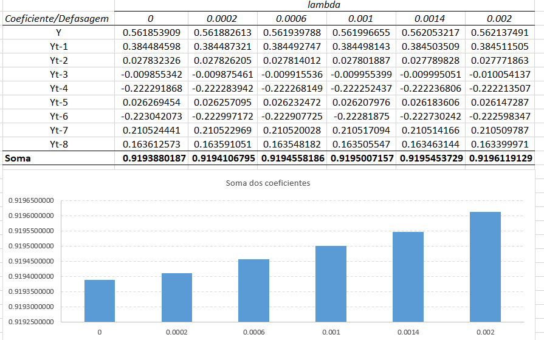

Solução para a multicolinearidade: A Regressão Ridge
Rodrigo H. Ozon
09/09/2020
Resumo
Muitas vezes veremos dentre os modelos de machine learning, termos como LASSO regression e Ridge Regression; e, justamente essa que queremos exemplificar nesse breve tutorial. Esse método é sugerido como exemplo de solução da multicolinearidade, formulado inicialmente por Hoerl e Kennard (Hoerl e Kennard, 1977).
Reproduzimos aqui o mesmo exemplo apresentado em Maddala, p. 144-145 e 149-150, 2001.
Algumas estimativas podem ser diferentes provavelmente pelas omissões de detalhes a este respeito do próprio autor ou pelos métodos empregados pelo uso de diferentes softwares.
Introdução
Em linhas gerais, a idéia é adicionar uma constante \(\lambda\) às variâncias das variáveis explicativas antes de resolver as equações normais.
Vamos a um exemplo numérico para elucidar com mais clareza:
Exemplo ilustrativo
Veremos os impactos da multicolinearidade nos dados considerando o seguinte modelo:
\[ Y=\beta_{1}X_{1}+\beta_{2}X_{2}+u.\quad\mbox{Se}\,\,X_{2}+2X_{2},\,\,\mbox{temos} \] \[ Y=\beta_{1}X_{1}+\beta_{2}(2X_{1})+u=(\beta_{1}+2\beta_{2})X_{1}+u \] Logo, apenas (\(\beta_{1}+2\beta_{2}\)), poderia ser estimado. Não podemos achar estimativas de \(\beta_{1}\) e \(\beta_{2}\) separadamente. Nesse caso, dizemos que existe “multicolinearidade perfeita,” porque \(X_{1}\) e \(X_{2}\) são perfeitamente correlacionadas (com \(R^{2}=1\)). Na prática, encontramos casos onde \(R^{2}\) não é exatamente 1, mas próximo de 1.
Como ilustração, considere o caso no qual:
\(\quad \quad \quad \quad S_{11}=\sum X_{1i}^{2}-n\overline{X}_{1}^{2}=200 \quad \quad \quad \quad \quad S_{12}=\sum X_{1i}X_{2i}-n\overline{X}_{1}\overline{X}_{2}=150\)
\(\quad \quad \quad \quad S_{13}=\sum X_{2i}^{2}-n\overline{X}_{2}^{2}=113\)
\(\quad \quad \quad \quad S_{1Y}=\sum X_{1i}Y_{i}-n\overline{X}_{1}\overline{Y}=350 \quad \quad \quad S_{2Y}=\sum X_{2i}Y_{i}-n\overline{X}_{2}\overline{Y}=263\)
Assim, as equações normais são:
\(S_{1Y}=\widehat{\beta}S_{11}+\widehat{\beta_{2}}S_{12}\) e simplificando de modo similar temos:
\(S_{2Y}=\widehat{\beta}S_{11}+\widehat{\beta_{2}}S_{12}\) o que nos possibilita resolver essas duas equações para acharmos \(\widehat{\beta_{1}}\) e \(\widehat{\beta_{2}}\), obtemos
\[ \widehat{\beta_{1}}=\frac{S_{22}S_{1Y}-S_{12}S_{2Y}}{S_{11}S_{22}-S_{12}^{2}} \] e
\[ \widehat{\beta_{2}}=\frac{S_{11}S_{2Y}-S_{12}S_{1Y}}{S_{11}S_{22}-S_{12}^{2}} \]
e o intercepto, então:
\[ \widehat{\alpha}=\overline{Y}-\widehat{\beta_{1}}\overline{X}_{1}-\widehat{\beta_{2}}\overline{X}_{2} \]
Então substituindo os valores nas equações normais teremos:
\[ \quad \quad \,\,200\widehat{\beta}_{1}+150\widehat{\beta}_{2}=350\quad \quad \mbox{e,} \]
\[ 150\widehat{\beta}_{1}+113\widehat{\beta}_{2}=263 \]
Em linhas gerais, a idéia é adicionar uma constante \(\lambda\) às variâncias das variáveis explicativas antes de resolver essas equações normais. Em nosso exemplo citado acima, adicionamos 5 a \(S_{11}\) e \(S_{12}\). Vemos agora que o nosso coeficiente de determinação se reduz:
Então se tínhamos \(R^{2}=\frac{(150)^{2}}{200(113)}=0,995\) agora temos \(R^{2}=\frac{(150)^{2}}{205(118)}=0,930\)
Pode-se facilmente ver que se trata de uma solução mecânica simples. Contudo, há uma enorme literatura sobre a regressão ridge.
A adição de \(\lambda\) às variâncias produz estimadores tendenciosos, mas o argumento é que se a variância puder ser reduzida, o erro quadrático médio diminuirá. Hoerl e Kennard, 1977 mostram que sempre existe uma constante \(\lambda>0\) tal como
\[ \sum^{k}_{i=1}\mbox{EQM}(\widetilde{\beta}_{i})<\sum^{k}_{i=1}\mbox{EQM}(\widehat{\beta}_{i}) \]
onde \(\widetilde{\beta}_{i}\) são os estimadores de \(\beta_{i}\) da regressão ridge, \(\widehat{\beta}_{i}\) são os estimadores de MQO e \(k\), o número de regressores.
Infelizmente, \(\lambda\)1 é uma função dos parâmetros de regressão \(\beta_{i}\) e da variância de erro \(\sigma^{2}\), que é desconhecida. Hoerl e Kennard sugerem a tentativa de diferentes valores de \(\lambda\) e a escolha de um valor para \(\lambda\) de forma que “o sistema se estabilize” ou que os “coeficientes não tenham valores não-razoáveis”. Assim argumentos subjetivos são usados.
Alguns outros sugeriram a obtenção de estimativas iniciais de \(\beta_{i}\) e \(\sigma^{2}\) e, então, o uso do \(\lambda\) estimado. Esse procedimento pode ser iterado e acharemos estimadores ridge iterados. Trata-se de um modelo que tem sido questionado devido a sua suposta inutilidade.2
Um outro problema da regressão ridge é o fato de que ela não é invariante a unidades de medição das variáveis explicativas e a transformações lineares das variáveis. Se tivermos duas variáveis explicativas \(X_{1}\) e \(X_{2}\) e medirmos \(X_{1}\) em dezenas e \(X_{2}\) em milhares, não fará sentido adicionar o mesmo valor de \(\lambda\) à variância de ambas. Esse problema pode ser evitado normalizando cada variável dividindo-as por seus devidos padrões. Mesmo se \(X_{1}\) e \(X_{2}\) forem medidas nas mesmas unidades, em alguns casos há diferentes transformações lineares de \(X_{1}\) e \(X_{2}\) que são igualmente sensíveis. Conforme discutido as equações demonstradas acima são todas equivalentes e sensíveis. Os estimadores ridge, porém, diferirão dependendo de qual dessas formas é usada.
Existem diferentes situações sob as quais a regressão ridge surge naturalmente. Elas iluminarão o caso das circunstâncias sob as quais o método será útil. Mencionamos três delas.
- Mínimos quadrados restritos. Suponha que estimamos os coeficientes de regressão sujeitos à condição de que
\[ \sum^{k}_{i=1}\beta_{i}^{2}=c \]
então acharíamos algo como a regressão ridge. O \(\lambda\) que usamos é o multiplicador lagrangeano na minimização. Para ver isso, suponha que tenhamos duas variáveis explicativas.
Achamos os estimadores de mínimos quadrados restritos minimizando
\[ \sum (Y-\beta_{1}X_{1}-\beta_{2}X_{2})^{2}+\lambda(\beta_{1}^{2}+\beta_{2}^{2}-c) \]
onde \(\lambda\) é o multiplicador Lagrangeano. Diferenciando essa expressão com respeito a \(\beta_{1}\) e \(\beta_{2}\) e igualando as derivadas a zero, achamos as equações normais
\[ 2\sum (Y-\beta_{1}X_{1}-\beta_{2}X_{2})(-X_{1})+2\lambda \beta_{1}=0 \]
\[ 2\sum (Y-\beta_{1}X_{1}-\beta_{2}X_{2})(-X_{1})+2\lambda \beta_{2}=0 \]
Essas equações pode ser escritas como
\[ (S_{11}+\lambda)\beta_{1}+S_{12}\beta_{2}=S_{1Y} \] \[ S_{12}\beta_{1}+(S_{22}+\lambda)\beta_{2}=S_{2Y} \]
onde:
\(S_{11}=\sum X_{1}^{2},\quad \quad \quad S_{12}=\sum X_{1}X_{2}\) e
\(S_{22}=\sum X^{2}_{2i}-n\overline{X}^{2}_{2}\) assim por diante.
Portanto, achamos a regressão ridge e \(\lambda\) é o multiplicador Lagrangeano. O valor de \(\lambda\) é decidido pelo critério \(\beta_{1}^{2}\) e \(\beta_{2}^{2}=c\). Nesse caso, existe um atalho para se escolher \(\lambda\).
É raro o caso em que temos conhecimento a priori sobre \(\beta_{i}\) que esteja na forma \(\sum \beta_{i}^{2}=c\). Mas algumas outras informações menos concretas também podem ser usadas para se escolher o valor de \(\lambda\) na regressão ridge. A versão de Brown e Beattie3 na estimação da função de produção usa informações a priori sobre a relação entre os sinais dos \(\beta_{i}^{'}s\).
Intepretação Bayesiana Não discutimos neste livro a abordagem Bayesiana à estatística. Contudo, grosso modo, o que tal abordagem faz é combinar sistematicamente algumas informações a priori sobre os parâmetros de regressão com informação amostral. Nessa abordagem, achamos as estimativas da regressão ridge dos \(\beta^{'}s\) se assumirmos que a informação a priori é da forma que \(\beta_{i}\sim IN(0,\sigma^{2}_{\beta})\). Nesse caso, a constante ridge \(\lambda\) é igual a \(\sigma^{2}/\sigma_{\beta}^{2}\). Novamente, \(\sigma^{2}\) não é conhecida mas tem que ser estimada. Entretanto, em quase todos os problemas sobre economia esse tipo de informação a priori (que as médias dos \(\beta^{'}s\) são zero) é muito pouco razoável. Isso sugere que um estimador ridge simples não faz sentido em econometria (com a interpretação Bayesiana). Obviamente, o pressuposto de que \(\beta_{i}\) tem média zero pode ser relaxado. Mas então acharemos estimadores mais complicados (estimadores ridge generalizados).
Interpretação de medição de erros. Considere o modelo com duas variáveis que discutimos sob mínimos quadrados restritos. Suponha que adicionamos erros aleatórios com média zero e variância \(\lambda\) em \(X_{1}\) e \(X_{2}\). Como esses erros são aleatórios, a covariância entre \(X_{1}\) e \(X_{2}\) não será afetada. As variâncias de \(X_{1}\) e \(X_{2}\) aumentarão em \(\lambda\). Dessa forma, achamos o estimador de regressão ridge. Essa interpretação torna o estimador ridge um tanto quanto suspeito. Smith e Campbell4 resumem isso em uma frase da seguinte forma: “Use dados menos precisos e ache estimativas mais precisas possíveis.”
Essas são situações nas quais a regressão ridge pode ser facilmente justificada. Em quase todos os outros casos, há julgamento subjetivo envolvido. Esse julgamento subjetivo é, muitas vezes, igualado à “informação a priori vaga”. Os métodos Bayesianos permitem uma análise sistemática dos dados com “informação a priori vaga” mais uma discussão desses modelos está além do escopo deste tutorial.
Por causa dessas deficiências da regressão ridge, o método não é recomendado como uma solução geral ao problema da multicolinearidade. Particularmente, a forma mais simples do método (onde uma constante \(\lambda\) é adicionada a cada variância) não é mais útil. Não obstante, à guisa de curiosidade, apresentaremos alguns resultados desse método.
#carrego os dados
library(readxl)
url<-"https://github.com/rhozon/Introdu-o-Econometria-com-Excel/blob/master/Maddala%20p.%20148.xlsx?raw=true"
dados <- tempfile()
download.file(url, dados, mode="wb")
dados<-read_excel(path = dados, sheet = 1)
library(knitr)
library(kableExtra)
kbl(cbind(dados)) %>%
kable_paper() %>%
scroll_box(width = "800px", height = "200px")| Ano_Trim | L | C | Y |
|---|---|---|---|
| 1952 I | 182.7 | 220.0 | 238.1 |
| 1952 II | 183.0 | 222.7 | 240.9 |
| 1952 III | 184.4 | 223.8 | 245.8 |
| 1952 IV | 187.0 | 230.2 | 248.8 |
| 1953 I | 189.4 | 234.0 | 253.3 |
| 1953 II | 192.2 | 236.2 | 256.1 |
| 1953 III | 193.8 | 236.0 | 255.9 |
| 1953 IV | 194.8 | 234.1 | 255.9 |
| 1954 I | 197.3 | 233.4 | 254.4 |
| 1954 II | 197.0 | 236.4 | 254.4 |
| 1954 III | 200.3 | 239.0 | 257.0 |
| 1954 IV | 204.2 | 243.2 | 260.9 |
| 1955 I | 207.6 | 248.7 | 263.0 |
| 1955 II | 209.4 | 253.7 | 271.5 |
| 1955 III | 211.1 | 259.9 | 276.5 |
| 1955 IV | 213.2 | 261.8 | 281.4 |
| 1956 I | 214.1 | 263.2 | 282.0 |
| 1956 II | 216.5 | 263.7 | 286.2 |
| 1956 III | 217.3 | 263.4 | 287.7 |
| 1956 IV | 217.3 | 266.9 | 291.0 |
| 1957 I | 218.2 | 268.9 | 291.1 |
| 1957 II | 218.5 | 270.4 | 294.6 |
| 1957 III | 219.8 | 273.4 | 296.1 |
| 1957 IV | 219.5 | 272.1 | 293.3 |
| 1958 I | 220.5 | 268.9 | 291.3 |
| 1958 II | 222.7 | 270.9 | 292.6 |
| 1958 III | 255.0 | 274.4 | 299.9 |
| 1958 IV | 299.4 | 278.7 | 302.1 |
| 1959 I | 232.2 | 283.8 | 305.9 |
| 1959 II | 235.2 | 289.7 | 312.5 |
| 1959 III | 237.2 | 290.8 | 311.3 |
| 1959 IV | 237.7 | 292.8 | 313.2 |
| 1960 I | 238.0 | 295.4 | 325.5 |
| 1960 II | 238.4 | 299.5 | 320.3 |
| 1960 III | 240.1 | 298.6 | 321.0 |
| 1960 IV | 243.3 | 299.6 | 320.1 |
| 1961 I | 246.1 | 297.0 | 318.4 |
| 1961 II | 250.0 | 301.6 | 324.8 |
Fonte: Maddala, p. 148, (2001). apud os dados são de Z. Griliches et al., “Notes on Estimated Aggregate Quartely Consumption Functions”. Econometrica, julho de 1962.
Caso queira rodar no R, segue o link da documentação do pacote para regressão ridge recomendado
\[ c_{t}=\beta_{0}Y_{t}+\beta_{1}Y_{t-1}+\beta_{2}Y_{t-2}+\ldots+\beta_{8}Y_{t-8}+u_{t} \]
Não é preciso dizer que os \(Y^{'}_{t}s\) são altamente intercorrelacionados. Os resultados são apresentados a seguir. Note que conforme \(\lambda\) aumenta , há uma suavização dos coeficientes e a estimativa de \(\beta_{0}\) diminui. Os coeficientes de MQO, obviamente são muito erráticos. Mas as estimativas de \(\beta_{0}\) (porção da renda corrente no consumo corrente) são implausivelmente baixas com a regressão ridge.
A elevação súbita dos coeficientes após o quinto trimestre também é algo muito implausível. Talvez possamos apenas estimar os efeitos somente acima de quatro períodos. As estimativas MQO são erráticas mesmo com quatro períodos. A computação das estimativas da regressão ridge com quatro períodos é apresentada como exercício para você reproduzir em seu Excel.
Ao simplesmente seguirmos o modelo de obtenção dos coeficientes propostos inicialmente no trabalho de Heoerl e Kennard 1970 e citado no trabalho seminal do prof. G. S. Maddala em 1974 p. 5, obtemos
\[ \widehat{\beta}=(X^{'}X^{-1})X^{'}y \] e o estimador modificado:
\[ \widehat{\beta}_{R}=(X^{'}X + kI)X^{'}y \]
Onde \(I\) é a matriz identidade dada por \((X^{'}X)(X^{'}X)^{-1}\)5 e a constante \(k\) faz o mesmo trabalho de \(0\geq\lambda\leq 1\). Se \(det(X^{'}X)\approx 0\) os estimadores de MQO serão sensíveis a uma série de erros, como coeficientes de regressão imprecisos ou não significativos (Kmenta, 1980), com sinal errado e espectro de autovalores não uniforme. Além disso, o método MQO, pode produzir altas variâncias de estimativas, grandes erros padrão e amplos intervalos de confiança. A qualidade e estabilidade do modelo ajustado pode ser questionável devido ao comportamento errático do MQO no caso de regressores são colineares.
Alguns pesquisadores podem tentar eliminar o(s) regressor(es) que causam o problema, removendo conscientemente eles do modelo. No entanto, este método pode destruir a utilidade do modelo por remover regressor(es) relevante(s) do modelo. Para controlar a variância e instabilidade das estimativas MQO, pode-se regularizar os coeficientes, com alguns métodos de regularização, como regressão ridge (RR), regressão de Liu, métodos de regressão Lasso etc., como alternativa ao MQO. Computacionalmente, RR suprime os efeitos da colinearidade e reduz a magnitude aparente da correlação entre regressores, a fim de obter estimativas mais estáveis dos coeficientes do que as estimativas de MQO e também melhora a precisão da previsão (ver Hoerl e Kennard, 1970a; Montgomery e Peck, 1982; Myers, 1986; Rawlings et al., 1998; Seber e Lee, 2003; Tripp, 1983, etc.).
Rodando uma regressão Ridge no Excel
Ao procedermos com o modelo matricial no software Microsoft Excel, obtemos os seguintes resultados:
Iniciaremos regredindo um modelo via MQO com a notação matricial normalmente no Excel. Na aba “Regressão Ridge” na primeira etapa calculamos:
\[ (X^{'}X) \]
Em seguida obtemos a inversa da matriz \((X^{'}X)\) ou seja, \((X^{'}X)^{-1}\):
Agora fazendo \(X^{'}y\)
E finalmente os coeficientes de MQO:
Então ao obtermos essas matrizes, agora calculamos a matriz identidade quando calculamos \((X^{'}X)(X^{'}X)^{-1}\)
Agora montamos a matriz que multiplica a constante \(\lambda\) pela identidade
Para então calcularmos \(X^{'}X+kI\)
Finalmente obtemos os coeficientes da regressão ridge
Confirmamos o que o autor (Maddala, 2001, p. 150) “Note que conforme \(\lambda\) aumenta há uma suavização dos coeficientes e o valor de \(\beta_{0}\) diminui.” Veja os valores das somas dos coeficientes dado os valores de \(\lambda\) que o autor usa:

Introdução a Regressão Ridge com o pacote lmridge do R
Resumo
O estimador de regressão ridge, é uma das alternativas comumente utilizadas ao convencional estimador de mínimos quadrados ordinários, evita os efeitos adversos nas situações em que existe algum considerável grau de multicolinearidade entre os regressores. Existem muitos pacotes de software disponíveis para estimativa de coeficientes de regressão ridge. No entanto, a maioria deles exibe métodos para estimar os parâmetros de viés ridge sem procedimentos de teste. O pacote lmridge mantido por Imdad Ullah Muhammad pode ser usado para estimar coeficientes ridge considerando uma gama de diferentes parâmetros de viéses existentes, para testar esses coeficientes com mais de 25 estatísticas relacionadas ridge, e para apresentar diferentes exibições gráficas dessas estatísticas.
Detecção da colinearidade
Diagnosticar a colinearidade é importante para muitos pesquisadores. Consiste em dois relacionados, mas separados elementos:
detectar a existência de relação colinear entre os regressores e;
avaliar o até que ponto esta relação degradou as estimativas dos parâmetros
Os diagnósticos mais sugeridos e amplamente utilizados: correlações de pares, fator inflacionário de variância (VIF) / tolerância (TOL) (Marquardt, 1970), valores próprios e autovetores (Kendall, 1957), CN & CI (Belsley et al., 1980; Chatterjee e Hadi, 2006; Maddala, 1988), método de Leamer (Greene, 2002), regra de Klein (Klein, 1962), os testes propostos por Farrar e Glauber (Farrar e Glauber, 1967), indicador vermelho (Kovács et al., 2005), VIF corrigido (Curto e Pinto, 2011) e as medidas de Theil (Theil, 1971), (ver também Imdadullah et al. (2016)). Todos esses diagnósticos medidas são implementadas no pacote R, mctest.
Em seguida, usamos o pacote lmridge para calcular os coeficientes para diferentes estatísticas relacionadas aos métodos de seleção do parâmetro de viés ridge. Para a escolha ideal do parâmetro de viés ridge, representações gráficas dos coeficientes ridge, valores VIF, critérios de validação cruzada (CV e GCV), ridge DF, RSS, PRESS, ISRM e escala m versus parâmetro de viés ridge usado são considerados. Além da representação gráfica do modelo critérios de seleção (AIC e BIC) de regressão de ridge versus ridge DF também são realizados.
Começamos rodando o modelo via MQO tradicional:
url<-"https://github.com/rhozon/Introdu-o-Econometria-com-Excel/blob/master/Maddala%20p.%20148.xlsx?raw=true"
dados <- tempfile()
download.file(url, dados, mode="wb")
dados<-read_excel(path = dados, sheet = 2)
kbl(cbind(dados)) %>%
kable_paper() %>%
scroll_box(width = "800px", height = "200px")| C | Y | Ylag1 | Ylag2 | Ylag3 | Ylag4 | Ylag5 | Ylag6 | Ylag7 | Ylag8 |
|---|---|---|---|---|---|---|---|---|---|
| 233.4 | 254.4 | 255.9 | 255.9 | 256.1 | 253.3 | 248.8 | 245.8 | 240.9 | 238.1 |
| 236.4 | 254.4 | 254.4 | 255.9 | 255.9 | 256.1 | 253.3 | 248.8 | 245.8 | 240.9 |
| 239.0 | 257.0 | 254.4 | 254.4 | 255.9 | 255.9 | 256.1 | 253.3 | 248.8 | 245.8 |
| 243.2 | 260.9 | 257.0 | 254.4 | 254.4 | 255.9 | 255.9 | 256.1 | 253.3 | 248.8 |
| 248.7 | 263.0 | 260.9 | 257.0 | 254.4 | 254.4 | 255.9 | 255.9 | 256.1 | 253.3 |
| 253.7 | 271.5 | 263.0 | 260.9 | 257.0 | 254.4 | 254.4 | 255.9 | 255.9 | 256.1 |
| 259.9 | 276.5 | 271.5 | 263.0 | 260.9 | 257.0 | 254.4 | 254.4 | 255.9 | 255.9 |
| 261.8 | 281.4 | 276.5 | 271.5 | 263.0 | 260.9 | 257.0 | 254.4 | 254.4 | 255.9 |
| 263.2 | 282.0 | 281.4 | 276.5 | 271.5 | 263.0 | 260.9 | 257.0 | 254.4 | 254.4 |
| 263.7 | 286.2 | 282.0 | 281.4 | 276.5 | 271.5 | 263.0 | 260.9 | 257.0 | 254.4 |
| 263.4 | 287.7 | 286.2 | 282.0 | 281.4 | 276.5 | 271.5 | 263.0 | 260.9 | 257.0 |
| 266.9 | 291.0 | 287.7 | 286.2 | 282.0 | 281.4 | 276.5 | 271.5 | 263.0 | 260.9 |
| 268.9 | 291.1 | 291.0 | 287.7 | 286.2 | 282.0 | 281.4 | 276.5 | 271.5 | 263.0 |
| 270.4 | 294.6 | 291.1 | 291.0 | 287.7 | 286.2 | 282.0 | 281.4 | 276.5 | 271.5 |
| 273.4 | 296.1 | 294.6 | 291.1 | 291.0 | 287.7 | 286.2 | 282.0 | 281.4 | 276.5 |
| 272.1 | 293.3 | 296.1 | 294.6 | 291.1 | 291.0 | 287.7 | 286.2 | 282.0 | 281.4 |
| 268.9 | 291.3 | 293.3 | 296.1 | 294.6 | 291.1 | 291.0 | 287.7 | 286.2 | 282.0 |
| 270.9 | 292.6 | 291.3 | 293.3 | 296.1 | 294.6 | 291.1 | 291.0 | 287.7 | 286.2 |
| 274.4 | 299.9 | 292.6 | 291.3 | 293.3 | 296.1 | 294.6 | 291.1 | 291.0 | 287.7 |
| 278.7 | 302.1 | 299.9 | 292.6 | 291.3 | 293.3 | 296.1 | 294.6 | 291.1 | 291.0 |
| 283.8 | 305.9 | 302.1 | 299.9 | 292.6 | 291.3 | 293.3 | 296.1 | 294.6 | 291.1 |
| 289.7 | 312.5 | 305.9 | 302.1 | 299.9 | 292.6 | 291.3 | 293.3 | 296.1 | 294.6 |
| 290.8 | 311.3 | 312.5 | 305.9 | 302.1 | 299.9 | 292.6 | 291.3 | 293.3 | 296.1 |
| 292.8 | 313.2 | 311.3 | 312.5 | 305.9 | 302.1 | 299.9 | 292.6 | 291.3 | 293.3 |
| 295.4 | 325.5 | 313.2 | 311.3 | 312.5 | 305.9 | 302.1 | 299.9 | 292.6 | 291.3 |
| 299.5 | 320.3 | 325.5 | 313.2 | 311.3 | 312.5 | 305.9 | 302.1 | 299.9 | 292.6 |
| 298.6 | 321.0 | 320.3 | 325.5 | 313.2 | 311.3 | 312.5 | 305.9 | 302.1 | 299.9 |
| 299.6 | 320.1 | 321.0 | 320.3 | 325.5 | 313.2 | 311.3 | 312.5 | 305.9 | 302.1 |
| 297.0 | 318.4 | 320.1 | 321.0 | 320.3 | 325.5 | 313.2 | 311.3 | 312.5 | 305.9 |
| 301.6 | 324.8 | 318.4 | 320.1 | 321.0 | 320.3 | 325.5 | 313.2 | 311.3 | 312.5 |
mqo<-lm(C~.,data = dados)
summary(mqo)##
## Call:
## lm(formula = C ~ ., data = dados)
##
## Residuals:
## Min 1Q Median 3Q Max
## -3.0100 -1.2734 0.1837 1.5004 2.9643
##
## Coefficients:
## Estimate Std. Error t value Pr(>|t|)
## (Intercept) 4.977927 5.231783 0.951 0.353
## Y 0.561854 0.115303 4.873 9.21e-05 ***
## Ylag1 0.384485 0.153463 2.505 0.021 *
## Ylag2 0.027832 0.153605 0.181 0.858
## Ylag3 -0.009855 0.154040 -0.064 0.950
## Ylag4 -0.222292 0.158558 -1.402 0.176
## Ylag5 0.026269 0.159173 0.165 0.871
## Ylag6 -0.223042 0.216616 -1.030 0.315
## Ylag7 0.210524 0.251760 0.836 0.413
## Ylag8 0.163613 0.164040 0.997 0.330
## ---
## Signif. codes: 0 '***' 0.001 '**' 0.01 '*' 0.05 '.' 0.1 ' ' 1
##
## Residual standard error: 2.014 on 20 degrees of freedom
## Multiple R-squared: 0.993, Adjusted R-squared: 0.9899
## F-statistic: 316.4 on 9 and 20 DF, p-value: < 2.2e-16Agora vamos investigar os padrões de colinearidades
library(mctest)
mctest(mqo)##
## Call:
## omcdiag(mod = mod, Inter = TRUE, detr = detr, red = red, conf = conf,
## theil = theil, cn = cn)
##
##
## Overall Multicollinearity Diagnostics
##
## MC Results detection
## Determinant |X'X|: 0.0000 1
## Farrar Chi-Square: 780.0597 1
## Red Indicator: 0.9631 1
## Sum of Lambda Inverse: 915.6656 1
## Theil's Method: 0.9515 1
## Condition Number: 815.0507 1
##
## 1 --> COLLINEARITY is detected by the test
## 0 --> COLLINEARITY is not detected by the testOs resultados de todas as medidas de diagnóstico de colinearidade geral indicam a existência de colinearidade entre os regressor(es). Esses resultados não informam qual (is) regressor(es) são razões de colinearidade. As medidas de diagnóstico individuais de colinearidade podem ser obtidas através de:
imcdiag(mqo,all=TRUE)##
## Call:
## imcdiag(mod = mqo, all = TRUE)
##
##
## All Individual Multicollinearity Diagnostics in 0 or 1
##
## VIF TOL Wi Fi Leamer CVIF Klein IND1 IND2
## Y 1 1 1 1 0 0 0 1 0
## Ylag1 1 1 1 1 0 0 0 1 1
## Ylag2 1 1 1 1 0 0 0 1 1
## Ylag3 1 1 1 1 0 0 0 1 1
## Ylag4 1 1 1 1 0 0 0 1 1
## Ylag5 1 1 1 1 0 0 0 1 1
## Ylag6 1 1 1 1 1 0 1 1 1
## Ylag7 1 1 1 1 1 0 1 1 1
## Ylag8 1 1 1 1 0 0 0 1 1
##
## 1 --> COLLINEARITY is detected by the test
## 0 --> COLLINEARITY is not detected by the test
##
## Ylag2 , Ylag3 , Ylag4 , Ylag5 , Ylag6 , Ylag7 , Ylag8 , coefficient(s) are non-significant may be due to multicollinearity
##
## R-square of y on all x: 0.993
##
## * use method argument to check which regressors may be the reason of collinearity
## ===================================Os resultados da maioria dos diagnósticos de colinearidade individual sugerem que todos os regressores são a razão para colinearidade entre regressores. A última linha da saída da função imcdiag () sugere que o method argument da função deve ser usado para verificar quais regressores podem ser a razão da colinearidade entre diferentes regressores.
Rodando a regressão ridge no R
Como estamos utilizando os dados de exemplo de Maddala, 2001 p. 148 neste tutorial, definimos do seguinte modo o nosso modelo:
library(lmridge)
lambdas<-c(0,0.0002,0.0006,0.0010,0.0014,0.0020)
ridge<-lmridge(C~.,dados,K=lambdas,scaling="sc")
summary(ridge)##
## Call:
## lmridge.default(formula = C ~ ., data = dados, K = lambdas, scaling = "sc")
##
##
## Coefficients: for Ridge parameter K= 0
## Estimate Estimate (Sc) StdErr (Sc) t-value (Sc) Pr(>|t|)
## Intercept 4.9779 -31023.1365 16805.9650 -1.8460 0.0798 .
## Y 0.5618 65.7313 13.1642 4.9932 0.0001 ***
## Ylag1 0.3845 45.3945 17.6822 2.5672 0.0184 *
## Ylag2 0.0278 3.3277 17.9228 0.1857 0.8546
## Ylag3 -0.0099 -1.1772 17.9564 -0.0656 0.9484
## Ylag4 -0.2223 -26.3680 18.3547 -1.4366 0.1663
## Ylag5 0.0263 3.0973 18.3153 0.1691 0.8674
## Ylag6 -0.2230 -25.5644 24.2295 -1.0551 0.3040
## Ylag7 0.2105 24.2975 28.3564 0.8569 0.4017
## Ylag8 0.1636 19.0066 18.5971 1.0220 0.3190
## ---
## Signif. codes: 0 '***' 0.001 '**' 0.01 '*' 0.05 '.' 0.1 ' ' 1
##
## Ridge Summary
## R2 adj-R2 DF ridge F AIC BIC
## 0.99300 0.99040 9.00002 332.26686 47.85786 162.50459
## Ridge minimum MSE= 2032.758 at K= 0.002
## P-value for F-test ( 9.00002 , 20.99994 ) = 1.398956e-20
## -------------------------------------------------------------------
##
##
## Coefficients: for Ridge parameter K= 2e-04
## Estimate Estimate (Sc) StdErr (Sc) t-value (Sc) Pr(>|t|)
## Intercept 4.9853 -31019.1039 16101.2473 -1.9265 0.0682 .
## Y 0.5601 65.5308 12.8883 5.0845 0.0001 ***
## Ylag1 0.3838 45.3114 17.1640 2.6399 0.0156 *
## Ylag2 0.0299 3.5739 17.4572 0.2047 0.8398
## Ylag3 -0.0126 -1.5107 17.4860 -0.0864 0.9320
## Ylag4 -0.2172 -25.7661 17.8030 -1.4473 0.1632
## Ylag5 0.0203 2.3875 17.7348 0.1346 0.8942
## Ylag6 -0.2122 -24.3265 22.9483 -1.0601 0.3016
## Ylag7 0.1994 23.0131 26.4801 0.8691 0.3950
## Ylag8 0.1681 19.5251 17.7249 1.1016 0.2836
## ---
## Signif. codes: 0 '***' 0.001 '**' 0.01 '*' 0.05 '.' 0.1 ' ' 1
##
## Ridge Summary
## R2 adj-R2 DF ridge F AIC BIC
## 0.99270 0.99000 8.82469 332.31699 47.51329 161.91434
## Ridge minimum MSE= 2032.758 at K= 0.002
## P-value for F-test ( 8.82469 , 21.00737 ) = 1.510331e-20
## -------------------------------------------------------------------
##
##
## Coefficients: for Ridge parameter K= 6e-04
## Estimate Estimate (Sc) StdErr (Sc) t-value (Sc) Pr(>|t|)
## Intercept 5.0064 -31011.5895 14922.6564 -2.0782 0.0505 .
## Y 0.5570 65.1665 12.3922 5.2587 <2e-16 ***
## Ylag1 0.3820 45.1076 16.2420 2.7772 0.0115 *
## Ylag2 0.0339 4.0555 16.6120 0.2441 0.8096
## Ylag3 -0.0172 -2.0526 16.6366 -0.1234 0.9030
## Ylag4 -0.2086 -24.7381 16.8332 -1.4696 0.1569
## Ylag5 0.0100 1.1793 16.7276 0.0705 0.9445
## Ylag6 -0.1942 -22.2645 20.8436 -1.0682 0.2979
## Ylag7 0.1815 20.9429 23.4213 0.8942 0.3816
## Ylag8 0.1750 20.3283 16.2906 1.2479 0.2262
## ---
## Signif. codes: 0 '***' 0.001 '**' 0.01 '*' 0.05 '.' 0.1 ' ' 1
##
## Ridge Summary
## R2 adj-R2 DF ridge F AIC BIC
## 0.99220 0.98920 8.51392 332.61624 46.93097 160.89657
## Ridge minimum MSE= 2032.758 at K= 0.002
## P-value for F-test ( 8.51392 , 21.05379 ) = 1.628288e-20
## -------------------------------------------------------------------
##
##
## Coefficients: for Ridge parameter K= 0.001
## Estimate Estimate (Sc) StdErr (Sc) t-value (Sc) Pr(>|t|)
## Intercept 5.0340 -31004.6153 13968.7336 -2.2196 0.0377 *
## Y 0.5542 64.8350 11.9558 5.4229 <2e-16 ***
## Ylag1 0.3801 44.8772 15.4422 2.9061 0.0085 **
## Ylag2 0.0378 4.5149 15.8634 0.2846 0.7788
## Ylag3 -0.0207 -2.4675 15.8875 -0.1553 0.8781
## Ylag4 -0.2014 -23.8860 16.0011 -1.4928 0.1505
## Ylag5 0.0016 0.1858 15.8760 0.0117 0.9908
## Ylag6 -0.1798 -20.6085 19.1801 -1.0745 0.2949
## Ylag7 0.1677 19.3503 21.0354 0.9199 0.3682
## Ylag8 0.1800 20.9105 15.1547 1.3798 0.1823
## ---
## Signif. codes: 0 '***' 0.001 '**' 0.01 '*' 0.05 '.' 0.1 ' ' 1
##
## Ridge Summary
## R2 adj-R2 DF ridge F AIC BIC
## 0.99160 0.98840 8.24438 333.04473 46.45383 160.04175
## Ridge minimum MSE= 2032.758 at K= 0.002
## P-value for F-test ( 8.24438 , 21.12448 ) = 1.649472e-20
## -------------------------------------------------------------------
##
##
## Coefficients: for Ridge parameter K= 0.0014
## Estimate Estimate (Sc) StdErr (Sc) t-value (Sc) Pr(>|t|)
## Intercept 5.0664 -30998.0305 13174.6182 -2.3529 0.0285 *
## Y 0.5515 64.5246 11.5665 5.5786 <2e-16 ***
## Ylag1 0.3781 44.6365 14.7386 3.0285 0.0064 **
## Ylag2 0.0414 4.9484 15.1944 0.3257 0.7479
## Ylag3 -0.0233 -2.7886 15.2194 -0.1832 0.8564
## Ylag4 -0.1953 -23.1623 15.2739 -1.5165 0.1443
## Ylag5 -0.0055 -0.6477 15.1407 -0.0428 0.9663
## Ylag6 -0.1679 -19.2435 17.8261 -1.0795 0.2926
## Ylag7 0.1567 18.0894 19.1235 0.9459 0.3549
## Ylag8 0.1837 21.3418 14.2277 1.5000 0.1485
## ---
## Signif. codes: 0 '***' 0.001 '**' 0.01 '*' 0.05 '.' 0.1 ' ' 1
##
## Ridge Summary
## R2 adj-R2 DF ridge F AIC BIC
## 0.99110 0.98770 8.00638 333.50892 46.05379 159.30823
## Ridge minimum MSE= 2032.758 at K= 0.002
## P-value for F-test ( 8.00638 , 21.20755 ) = 1.615039e-20
## -------------------------------------------------------------------
##
##
## Coefficients: for Ridge parameter K= 0.002
## Estimate Estimate (Sc) StdErr (Sc) t-value (Sc) Pr(>|t|)
## Intercept 5.1210 -30988.6845 12196.5462 -2.5408 0.0189 *
## Y 0.5478 64.0843 11.0524 5.7982 <2e-16 ***
## Ylag1 0.3750 44.2741 13.8249 3.2025 0.0042 **
## Ylag2 0.0464 5.5497 14.3125 0.3877 0.7020
## Ylag3 -0.0263 -3.1413 14.3394 -0.2191 0.8287
## Ylag4 -0.1876 -22.2516 14.3334 -1.5524 0.1353
## Ylag5 -0.0142 -1.6750 14.2006 -0.1180 0.9072
## Ylag6 -0.1534 -17.5850 16.1999 -1.0855 0.2898
## Ylag7 0.1441 16.6269 16.8765 0.9852 0.3356
## Ylag8 0.1876 21.7973 13.1103 1.6626 0.1110
## ---
## Signif. codes: 0 '***' 0.001 '**' 0.01 '*' 0.05 '.' 0.1 ' ' 1
##
## Ridge Summary
## R2 adj-R2 DF ridge F AIC BIC
## 0.99030 0.98660 7.69473 334.16792 45.56150 158.37926
## Ridge minimum MSE= 2032.758 at K= 0.002
## P-value for F-test ( 7.69473 , 21.34246 ) = 1.515096e-20
## -------------------------------------------------------------------print(ridge)## Call:
## lmridge.default(formula = C ~ ., data = dados, K = lambdas, scaling = "sc")
##
## Intercept Y Ylag1 Ylag2 Ylag3 Ylag4 Ylag5 Ylag6
## K=0 4.97793 0.56185 0.38448 0.02783 -0.00986 -0.22229 0.02627 -0.22304
## K=2e-04 4.98526 0.56014 0.38378 0.02989 -0.01265 -0.21722 0.02025 -0.21224
## K=6e-04 5.00642 0.55703 0.38205 0.03392 -0.01718 -0.20855 0.01000 -0.19425
## K=0.001 5.03404 0.55419 0.38010 0.03776 -0.02066 -0.20137 0.00158 -0.17980
## K=0.0014 5.06635 0.55154 0.37806 0.04139 -0.02335 -0.19527 -0.00549 -0.16789
## K=0.002 5.12103 0.54778 0.37500 0.04642 -0.02630 -0.18759 -0.01421 -0.15342
## Ylag7 Ylag8
## K=0 0.21052 0.16361
## K=2e-04 0.19940 0.16808
## K=6e-04 0.18146 0.17499
## K=0.001 0.16766 0.18000
## K=0.0014 0.15673 0.18371
## K=0.002 0.14406 0.18763Na função acima, ao definirmos scaling=“sc” informamos ao R para o método para padronizar os preditores. A opção scaling=“sc” escala (trata) os preditores para a forma de correlação, de modo que a matriz de correlação tenha elementos de sua diagonal iguais a 1. A opção scaling=“scaled” padroniza os preditores para ter média zero e variância um. a opção scaling=“centered” centraliza os preditores.
Os resultados gerados pela função summary(ridge) nos apontam a questão da significância somente até o segundo o lag(Y) para todos os valores de \(\lambda\) (K) definidos por Maddala, 2001.
Como todas as estimativas apontaram para os valores de MSE (em português erro quadrático médio, EQM) iguais, veremos como se comportam os valores de \(\lambda\) nos coeficientes:
ridge$coef## K=0 K=2e-04 K=6e-04 K=0.001 K=0.0014 K=0.002
## Y 65.731305 65.530790 65.166526 64.8350317 64.5245663 64.084283
## Ylag1 45.394476 45.311412 45.107600 44.8771691 44.6364639 44.274149
## Ylag2 3.327698 3.573930 4.055495 4.5148784 4.9484288 5.549673
## Ylag3 -1.177202 -1.510742 -2.052591 -2.4675231 -2.7885911 -3.141285
## Ylag4 -26.367967 -25.766077 -24.738143 -23.8860275 -23.1623227 -22.251586
## Ylag5 3.097333 2.387521 1.179310 0.1858217 -0.6476783 -1.675005
## Ylag6 -25.564391 -24.326547 -22.264459 -20.6085035 -19.2434951 -17.585024
## Ylag7 24.297507 23.013143 20.942943 19.3502803 18.0894170 16.626918
## Ylag8 19.006640 19.525088 20.328278 20.9105339 21.3418083 21.797274colSums(ridge$coef)## K=0 K=2e-04 K=6e-04 K=0.001 K=0.0014 K=0.002
## 107.7454 107.7385 107.7250 107.7117 107.6986 107.6794Esse resultado das somas dos coeficientes vai contra o que Maddala, 2001, p. 150, obteve:
“Note que conforme \(\lambda\) aumenta, há uma suavização dos coeficientes e a estimativa de \(\beta_{0}\) diminui.”
Vamos ver como o EQM se comporta para cada valor de \(\lambda\)
#Utilize o comando ridge$rfit para ver o modelo ajustado ou então o comando predict(ridge) para os valores projetados.
eqm_i<-press(ridge)
eqm_i## K=0 K=2e-04 K=6e-04 K=0.001 K=0.0014 K=0.002
## 1 -3.436412270 -3.4622053 -3.50967900 -3.55321370 -3.5940000 -3.6515494
## 2 0.882456270 0.8729025 0.84913827 0.82107791 0.7901982 0.7405415
## 3 1.643144090 1.6189014 1.57465346 1.53437308 1.4968753 1.4441941
## 4 1.870306577 1.8579476 1.83493609 1.81371286 1.7938880 1.7662322
## 5 3.161070410 3.1730853 3.19314265 3.20925511 3.2225223 3.2387226
## 6 1.951052415 1.9537015 1.96047465 1.96901220 1.9790485 1.9963839
## 7 2.465231392 2.4987973 2.56123437 2.61882573 2.6726713 2.7480497
## 8 0.003445359 0.0161265 0.04429632 0.07511198 0.1076929 0.1586658
## 9 0.425316754 0.4490045 0.49302134 0.53335131 0.5707011 0.6223161
## 10 0.401173510 0.3814554 0.34738473 0.31915829 0.2955884 0.2671314
## 11 -3.350856906 -3.2577319 -3.10526691 -2.98515293 -2.8876692 -2.7711449
## 12 0.616961476 0.5466639 0.43483191 0.34962277 0.2823566 0.2041038
## 13 0.107127368 0.1461352 0.20585262 0.24849054 0.2795557 0.3115193
## 14 -1.116029953 -1.1369548 -1.17380200 -1.20536850 -1.2329051 -1.2684007
## 15 -1.863538427 -1.8077179 -1.71740348 -1.64739119 -1.5914957 -1.5259834
## 16 -1.704845464 -1.7381579 -1.79282315 -1.83650252 -1.8728205 -1.9180726
## 17 -3.918873258 -3.8900254 -3.84822397 -3.82155109 -3.8053259 -3.7943232
## 18 -0.493640945 -0.5421762 -0.62711145 -0.70027376 -0.7650708 -0.8510526
## 19 -2.948021867 -2.9117795 -2.85140373 -2.80291913 -2.7629462 -2.7143896
## 20 -4.022087627 -3.9640745 -3.86093264 -3.77091884 -3.6909533 -3.5855423
## 21 -1.925655468 -1.9122636 -1.88553276 -1.85885380 -1.8322340 -1.7925779
## 22 -2.612257266 -2.5171418 -2.35802336 -2.22793761 -2.1176027 -1.9773375
## 23 -1.703008612 -1.6886501 -1.65498015 -1.61768007 -1.5787394 -1.5196118
## 24 2.277639927 2.2742372 2.26843581 2.26363952 2.2597391 2.2551747
## 25 -1.751299809 -1.7483210 -1.73096984 -1.70393200 -1.6712660 -1.6167103
## 26 3.888432693 3.8564253 3.79758627 3.74481395 3.6975268 3.6354183
## 27 1.544042873 1.4993854 1.41835607 1.34726254 1.2847379 1.2043188
## 28 8.152254138 7.8519738 7.34698245 6.93597022 6.5927383 6.1694591
## 29 5.538292585 5.3088905 4.91586915 4.58981897 4.3133773 3.9672448
## 30 4.896907396 4.8467930 4.75220934 4.66526302 4.5852677 4.4768230A função press é uma função genérica que calcula a soma dos quadrados do erro residual de previsão (prediction residual error sum of squares = PRESS) para coeficientes ridge.
colSums(eqm_i)## K=0 K=2e-04 K=6e-04 K=0.001 K=0.0014 K=0.002
## 8.978327 8.575227 7.882253 7.307065 6.821457 6.219603Assim, notamos que ao valor de \(K=\lambda=0.002\) temos o menor EQM.
A função kest(), que funciona com o modelo ridge ajustado, calcula diferentes parâmetros viés desenvolvido por diferentes pesquisadores. A lista de diferentes valores de k (22 no total no pacote lmridge) pode ajudar em decidir a quantidade de viés precisa ser introduzido no RR.
kest<-kest(ridge)
kest## Ridge k from different Authors
##
## k values
## Thisted (1976): 0.00311
## Dwividi & Srivastava (1978): 0.00044
## LW (lm.ridge) 0.07022
## LW (1976) 0.00301
## HKB (1975) 0.00400
## Kibria (2003) (AM) 0.39692
## Minimum GCV at 0.00200
## Minimum CV at 0.00200
## Kibria 2003 (GM): 0.01451
## Kibria 2003 (MED): 0.01070
## Muniz et al. 2009 (KM2): 33.42384
## Muniz et al. 2009 (KM3): 0.43561
## Muniz et al. 2009 (KM4): 8.30103
## Muniz et al. 2009 (KM5): 0.12047
## Muniz et al. 2009 (KM6): 9.66661
## Mansson et al. 2012 (KMN8): 33.45992
## Mansson et al. 2012 (KMN9): 0.36078
## Mansson et al. 2012 (KMN10): 8.82099
## Mansson et al. 2012 (KMN11): 0.11337
## Mansson et al. 2012 (KMN12): 9.79061
## Dorugade et al. 2010: 0.00000
## Dorugade et al. 2014: 0.00000Isso nos levaria a fazer um exercício com todos esses valores sugeridos por esses diferentes pesquisadores com os valores de \(\lambda=\)k values. (vamos deixar isso para depois).
As funções rstats1() e rstats2() podem ser usadas para calcular estatísticas diferentes para um determinado parâmetro ridge estimado especificado em uma função lmridge. As estatísticas do modelo ridge são MSE, desvio-quadrático, Estatísticas \(F\), variância ridge, graus de liberdade por Hastie e Tibshirani (1990), números de condição, PRESS, \(R^{2}\), e ISRM etc. A seguir estão os resultados usando as funções rstats1() e rstats2(), para os valores de \(\lambda\) em Maddala, 2001, p. 150:
rstats1(ridge)##
## Ridge Regression Statistics 1:
##
## Variance Bias^2 MSE rsigma2 F R2 adj-R2 CN
## K=0 3538.966 0.0000 3538.966 3.8649 332.2669 0.9930 0.9904 3307.218
## K=2e-04 3244.689 4.5357 3249.224 3.8643 332.3170 0.9927 0.9900 3073.710
## K=6e-04 2781.667 31.9218 2813.589 3.8609 332.6162 0.9922 0.9892 2693.398
## K=0.001 2433.572 71.4428 2505.015 3.8559 333.0447 0.9916 0.9884 2396.861
## K=0.0014 2161.943 115.5025 2277.445 3.8505 333.5089 0.9911 0.9877 2159.164
## K=0.002 1849.980 182.7783 2032.758 3.8429 334.1679 0.9903 0.9866 1879.596Note que o menor valor de MSE (EQM) é para \(\lambda=0.002\) com a menor variância e menor CN (Número de Condição, identifica a multicolinearidade). Veremos as próximas estatísticas:
rstats2(ridge)##
## Ridge Regression Statistics 2:
##
## CK DF ridge EP REDF EF ISRM m scale PRESS
## K= 0 11.0000 9.0000 9.0001 20.9999 0.0000 8.9804 0.0000 259.0208
## K= 2e-04 10.6567 8.8247 8.9926 21.0074 64.7717 8.9794 0.1753 248.9542
## K= 6e-04 10.0816 8.5139 8.9462 21.0538 23.6319 8.9776 0.4861 232.6630
## K= 0.001 9.6132 8.2444 8.8755 21.1245 15.3926 8.9759 0.7556 220.0163
## K= 0.0014 9.2203 8.0064 8.7924 21.2076 11.8520 8.9743 0.9936 209.8984
## K= 0.002 8.7319 7.6947 8.6575 21.3425 9.1827 8.9721 1.3053 198.0194Os resíduos, valores ajustados da regressão ridge (RR) e valores previstos da variável de resposta (C = consumo real per capita) podem ser calculados usando as funções residual(), fitted() e predict(), respectivamente. Para obter matriz de Var-Cov, FIV e matriz estimada (“matriz-chapéu”), as funções vcov(), vif() e hatr() podem ser usadas. Os graus de liberdade são calculados seguindo Hastie e Tibshirani (1990). Os resultados para FIV, Var-Cov e elementos diagonais da matriz estimada das funções vif(), vcov() e hatr() são fornecidas abaixo para o objeto lambdas.
hatr(ridge)## [[1]]
## 1 2 3 4 5 6 7 8
## 1 0.21630 0.15038 0.12691 0.03878 0.01564 -0.02500 -0.01649 -0.01357
## 2 0.15038 0.19628 0.13046 0.08254 0.05862 -0.00535 -0.03568 -0.03405
## 3 0.12691 0.13046 0.16749 0.12075 0.07121 0.03118 -0.01575 -0.04724
## 4 0.03878 0.08254 0.12075 0.16516 0.11570 0.08044 0.02452 -0.02388
## 5 0.01564 0.05862 0.07121 0.11570 0.16202 0.09218 0.07903 0.02343
## 6 -0.02500 -0.00535 0.03118 0.08044 0.09218 0.19742 0.10897 0.10208
## 7 -0.01649 -0.03568 -0.01575 0.02452 0.07903 0.10897 0.20424 0.11676
## 8 -0.01357 -0.03405 -0.04724 -0.02388 0.02343 0.10208 0.11676 0.21295
## 9 0.06751 -0.01515 -0.03108 -0.08026 0.00188 -0.00399 0.08816 0.09537
## 10 0.05345 0.02026 -0.04383 -0.04412 -0.08867 0.03624 0.00438 0.09779
## 11 0.04324 0.07021 -0.01709 -0.06498 -0.05085 -0.08110 0.05420 0.02599
## 12 0.05982 -0.00471 0.04073 0.00722 -0.10205 -0.04935 -0.08636 0.05310
## 13 -0.01780 0.04427 -0.00307 0.03028 0.01578 -0.09151 -0.05003 -0.08905
## 14 -0.01320 -0.00012 -0.00628 0.03934 -0.03166 0.01447 -0.07234 -0.01688
## 15 -0.03681 0.02516 -0.02170 -0.00527 0.02617 -0.03520 0.03022 -0.05116
## 16 0.07973 -0.01433 0.02781 -0.01490 -0.00955 -0.05864 -0.06617 -0.00519
## 17 0.04267 0.07914 0.01569 -0.02063 0.03874 -0.04293 -0.08246 -0.10367
## 18 0.08207 0.03235 0.06989 0.01496 -0.02664 -0.00241 -0.06155 -0.10393
## 19 -0.09142 0.02064 0.03425 0.07218 0.01425 0.04640 0.01072 -0.04693
## 20 -0.06462 -0.11059 0.04769 0.06971 0.06162 -0.01520 0.02120 -0.01659
## 21 -0.14910 -0.10648 -0.06487 0.05983 0.08827 0.09152 -0.02671 0.00480
## 22 -0.14710 -0.11088 -0.12425 -0.04318 0.03429 0.12086 0.12241 0.01495
## 23 -0.00244 -0.10442 -0.10378 -0.12599 -0.03749 -0.02105 0.10746 0.10648
## 24 -0.01473 -0.03396 -0.06975 -0.14479 -0.07500 -0.02882 -0.03682 0.07960
## 25 -0.10206 -0.14518 -0.04184 -0.03325 -0.17765 0.03898 -0.01511 -0.01701
## 26 -0.08985 -0.09365 -0.11127 -0.02813 -0.02288 -0.20475 0.02078 -0.03734
## 27 -0.09445 -0.03610 -0.09739 -0.09597 -0.04083 -0.04036 -0.19502 0.03565
## 28 0.04634 -0.08866 -0.02697 -0.08992 -0.09679 -0.10347 -0.06835 -0.22765
## 29 -0.04244 0.04555 -0.08892 -0.03363 -0.08499 -0.08561 -0.09887 -0.06386
## 30 -0.10176 -0.01655 0.03101 -0.07249 -0.05381 -0.06600 -0.06532 -0.07095
## 9 10 11 12 13 14 15 16
## 1 0.06751 0.05345 0.04324 0.05982 -0.01780 -0.01320 -0.03681 0.07973
## 2 -0.01515 0.02026 0.07021 -0.00471 0.04427 -0.00012 0.02516 -0.01433
## 3 -0.03108 -0.04383 -0.01709 0.04073 -0.00307 -0.00628 -0.02170 0.02781
## 4 -0.08026 -0.04412 -0.06498 0.00722 0.03028 0.03934 -0.00527 -0.01490
## 5 0.00188 -0.08867 -0.05085 -0.10205 0.01578 -0.03166 0.02617 -0.00955
## 6 -0.00399 0.03624 -0.08110 -0.04935 -0.09151 0.01447 -0.03520 -0.05864
## 7 0.08816 0.00438 0.05420 -0.08636 -0.05003 -0.07234 0.03022 -0.06617
## 8 0.09537 0.09779 0.02599 0.05310 -0.08905 -0.01688 -0.05116 -0.00519
## 9 0.22414 0.05072 0.10976 -0.00310 0.03736 -0.07000 0.01318 0.00379
## 10 0.05072 0.23121 0.06665 0.11148 -0.00912 0.08909 -0.04472 -0.04333
## 11 0.10976 0.06665 0.27405 -0.00396 0.12572 -0.06117 0.10892 -0.13151
## 12 -0.00310 0.11148 -0.00396 0.30072 0.00331 0.09233 -0.11494 0.08295
## 13 0.03736 -0.00912 0.12572 0.00331 0.29136 0.04804 0.11459 -0.10966
## 14 -0.07000 0.08909 -0.06117 0.09233 0.04804 0.12241 -0.03833 -0.00737
## 15 0.01318 -0.04472 0.10892 -0.11494 0.11459 -0.03833 0.11149 -0.10599
## 16 0.00379 -0.04333 -0.13151 0.08295 -0.10966 -0.00737 -0.10599 0.20959
## 17 0.00606 -0.06439 -0.01275 -0.14613 0.04919 -0.02806 0.05443 0.01209
## 18 -0.09003 -0.03092 -0.11867 -0.02353 -0.14724 -0.00187 -0.06220 0.10116
## 19 -0.17993 -0.05974 0.00249 -0.05154 -0.04033 0.00001 0.04241 -0.10692
## 20 -0.04878 -0.20320 -0.14932 0.07158 -0.05727 -0.04758 -0.06191 0.13645
## 21 -0.06424 -0.05464 -0.20958 -0.04992 0.04352 0.09033 -0.02547 0.01399
## 22 0.01744 0.00228 -0.02101 -0.23426 -0.01995 -0.02192 0.07694 -0.14145
## 23 0.06891 -0.01061 -0.02454 -0.05949 -0.22660 -0.11144 -0.05163 0.13002
## 24 0.07659 0.02282 0.03504 0.00507 -0.10071 -0.06616 -0.03095 0.04161
## 25 -0.06056 0.12961 0.00423 0.18335 -0.01465 0.10351 -0.05414 -0.10373
## 26 -0.00250 -0.08310 0.09285 0.04095 0.17508 -0.00801 0.08129 0.03424
## 27 0.00764 0.02109 -0.08339 0.05582 0.06515 0.07178 -0.03973 0.04823
## 28 0.06814 -0.04082 -0.05315 -0.08409 0.05398 -0.00316 0.02068 0.05425
## 29 -0.23351 0.07323 -0.02016 -0.05626 -0.08637 0.07530 0.01449 0.00807
## 30 -0.05352 -0.18909 0.08986 -0.03876 -0.03428 -0.14105 0.06020 -0.06522
## 17 18 19 20 21 22 23 24
## 1 0.04267 0.08207 -0.09142 -0.06462 -0.14910 -0.14710 -0.00244 -0.01473
## 2 0.07914 0.03235 0.02064 -0.11059 -0.10648 -0.11088 -0.10442 -0.03396
## 3 0.01569 0.06989 0.03425 0.04769 -0.06487 -0.12425 -0.10378 -0.06975
## 4 -0.02063 0.01496 0.07218 0.06971 0.05983 -0.04318 -0.12599 -0.14479
## 5 0.03874 -0.02664 0.01425 0.06162 0.08827 0.03429 -0.03749 -0.07500
## 6 -0.04293 -0.00241 0.04640 -0.01520 0.09152 0.12086 -0.02105 -0.02882
## 7 -0.08246 -0.06155 0.01072 0.02120 -0.02671 0.12241 0.10746 -0.03682
## 8 -0.10367 -0.10393 -0.04693 -0.01659 0.00480 0.01495 0.10648 0.07960
## 9 0.00606 -0.09003 -0.17993 -0.04878 -0.06424 0.01744 0.06891 0.07659
## 10 -0.06439 -0.03092 -0.05974 -0.20320 -0.05464 0.00228 -0.01061 0.02282
## 11 -0.01275 -0.11867 0.00249 -0.14932 -0.20958 -0.02101 -0.02454 0.03504
## 12 -0.14613 -0.02353 -0.05154 0.07158 -0.04992 -0.23426 -0.05949 0.00507
## 13 0.04919 -0.14724 -0.04033 -0.05727 0.04352 -0.01995 -0.22660 -0.10071
## 14 -0.02806 -0.00187 0.00001 -0.04758 0.09033 -0.02192 -0.11144 -0.06616
## 15 0.05443 -0.06220 0.04241 -0.06191 -0.02547 0.07694 -0.05163 -0.03095
## 16 0.01209 0.10116 -0.10692 0.13645 0.01399 -0.14145 0.13002 0.04161
## 17 0.19860 0.05475 -0.04330 -0.10041 0.02740 0.04172 -0.04316 0.04017
## 18 0.05475 0.21671 0.03529 0.01666 -0.05245 -0.02011 0.06693 -0.00829
## 19 -0.04330 0.03529 0.24759 0.02371 -0.02583 0.04376 -0.05759 -0.05394
## 20 -0.10041 0.01666 0.02371 0.37973 0.09165 -0.10575 0.06447 -0.05283
## 21 0.02740 -0.05245 -0.02583 0.09165 0.33226 0.12062 -0.08347 -0.06232
## 22 0.04172 -0.02011 0.04376 -0.10575 0.12062 0.33440 0.04882 -0.00935
## 23 -0.04316 0.06693 -0.05759 0.06447 -0.08347 0.04882 0.37210 0.12211
## 24 0.04017 -0.00829 -0.05394 -0.05283 -0.06232 -0.00935 0.12211 0.21964
## 25 -0.19495 0.01676 0.09624 0.00758 -0.02842 0.04799 -0.09888 -0.04101
## 26 -0.08740 -0.14297 -0.02834 0.16619 0.01270 -0.08003 0.08585 -0.10724
## 27 0.11873 -0.09686 -0.10734 -0.05920 0.20216 -0.03912 -0.09961 0.18281
## 28 0.11945 0.16515 -0.14039 -0.01468 -0.00433 0.11534 0.00773 -0.05082
## 29 0.03818 0.11150 0.16258 -0.16306 -0.03719 0.01853 0.11312 -0.01014
## 30 0.03321 0.00550 0.18102 0.11278 -0.13404 -0.04200 -0.03183 0.17219
## 25 26 27 28 29 30
## 1 -0.10206 -0.08985 -0.09445 0.04634 -0.04244 -0.10176
## 2 -0.14518 -0.09365 -0.03610 -0.08866 0.04555 -0.01655
## 3 -0.04184 -0.11127 -0.09739 -0.02697 -0.08892 0.03101
## 4 -0.03325 -0.02813 -0.09597 -0.08992 -0.03363 -0.07249
## 5 -0.17765 -0.02288 -0.04083 -0.09679 -0.08499 -0.05381
## 6 0.03898 -0.20475 -0.04036 -0.10347 -0.08561 -0.06600
## 7 -0.01511 0.02078 -0.19502 -0.06835 -0.09887 -0.06532
## 8 -0.01701 -0.03734 0.03565 -0.22765 -0.06386 -0.07095
## 9 -0.06056 -0.00250 0.00764 0.06814 -0.23351 -0.05352
## 10 0.12961 -0.08310 0.02109 -0.04082 0.07323 -0.18909
## 11 0.00423 0.09285 -0.08339 -0.05315 -0.02016 0.08986
## 12 0.18335 0.04095 0.05582 -0.08409 -0.05626 -0.03876
## 13 -0.01465 0.17508 0.06515 0.05398 -0.08637 -0.03428
## 14 0.10351 -0.00801 0.07178 -0.00316 0.07530 -0.14105
## 15 -0.05414 0.08129 -0.03973 0.02068 0.01449 0.06020
## 16 -0.10373 0.03424 0.04823 0.05425 0.00807 -0.06522
## 17 -0.19495 -0.08740 0.11873 0.11945 0.03818 0.03321
## 18 0.01676 -0.14297 -0.09686 0.16515 0.11150 0.00550
## 19 0.09624 -0.02834 -0.10734 -0.14039 0.16258 0.18102
## 20 0.00758 0.16619 -0.05920 -0.01468 -0.16306 0.11278
## 21 -0.02842 0.01270 0.20216 -0.00433 -0.03719 -0.13404
## 22 0.04799 -0.08003 -0.03912 0.11534 0.01853 -0.04200
## 23 -0.09888 0.08585 -0.09961 0.00773 0.11312 -0.03183
## 24 -0.04101 -0.10724 0.18281 -0.05082 -0.01014 0.17219
## 25 0.52542 -0.07336 -0.09356 0.13234 -0.06173 0.07108
## 26 -0.07336 0.56458 -0.07809 -0.01916 0.11612 -0.09254
## 27 -0.09356 -0.07809 0.51603 -0.09696 -0.00724 0.07615
## 28 0.13234 -0.01916 -0.09696 0.60305 -0.11196 -0.06512
## 29 -0.06173 0.11612 -0.00724 -0.11196 0.60551 -0.09626
## 30 0.07108 -0.09254 0.07615 -0.06512 -0.09626 0.59757
##
## [[2]]
## 1 2 3 4 5 6 7 8
## 1 0.21408 0.15125 0.12588 0.03933 0.01662 -0.02422 -0.01621 -0.01360
## 2 0.15125 0.19488 0.13113 0.08277 0.05803 -0.00539 -0.03584 -0.03384
## 3 0.12588 0.13113 0.16652 0.12075 0.07182 0.03155 -0.01546 -0.04717
## 4 0.03933 0.08277 0.12075 0.16426 0.11565 0.08014 0.02498 -0.02373
## 5 0.01662 0.05803 0.07182 0.11565 0.16078 0.09252 0.07858 0.02391
## 6 -0.02422 -0.00539 0.03155 0.08014 0.09252 0.19584 0.10944 0.10155
## 7 -0.01621 -0.03584 -0.01546 0.02498 0.07858 0.10944 0.20242 0.11718
## 8 -0.01360 -0.03384 -0.04717 -0.02373 0.02391 0.10155 0.11718 0.21129
## 9 0.06653 -0.01492 -0.03143 -0.07910 0.00133 -0.00273 0.08723 0.09608
## 10 0.05382 0.02011 -0.04330 -0.04459 -0.08761 0.03452 0.00552 0.09691
## 11 0.04524 0.06786 -0.01587 -0.06403 -0.05250 -0.08021 0.05170 0.02718
## 12 0.05734 -0.00201 0.03863 0.00624 -0.09946 -0.04953 -0.08385 0.05122
## 13 -0.01476 0.04240 -0.00152 0.02971 0.01317 -0.09091 -0.05082 -0.08682
## 14 -0.01257 0.00025 -0.00599 0.03802 -0.03102 0.01302 -0.07051 -0.01733
## 15 -0.03431 0.02293 -0.02012 -0.00491 0.02400 -0.03471 0.02824 -0.04951
## 16 0.07576 -0.01150 0.02566 -0.01481 -0.00762 -0.05754 -0.06448 -0.00656
## 17 0.04376 0.07737 0.01684 -0.01988 0.03709 -0.04278 -0.08286 -0.10250
## 18 0.07937 0.03385 0.06852 0.01518 -0.02470 -0.00261 -0.06090 -0.10428
## 19 -0.08924 0.01919 0.03511 0.07172 0.01401 0.04536 0.00983 -0.04714
## 20 -0.06782 -0.10723 0.04500 0.06932 0.06288 -0.01319 0.02169 -0.01724
## 21 -0.14763 -0.10618 -0.06406 0.05844 0.08748 0.09026 -0.02478 0.00472
## 22 -0.14439 -0.11282 -0.12219 -0.04293 0.03266 0.11958 0.12076 0.01643
## 23 -0.00559 -0.10293 -0.10488 -0.12480 -0.03613 -0.01978 0.10655 0.10514
## 24 -0.01543 -0.03435 -0.06999 -0.14352 -0.07472 -0.02885 -0.03663 0.07835
## 25 -0.10280 -0.14326 -0.04322 -0.03436 -0.17511 0.03720 -0.01419 -0.01724
## 26 -0.08953 -0.09335 -0.11103 -0.02887 -0.02430 -0.20207 0.01931 -0.03647
## 27 -0.09273 -0.03720 -0.09638 -0.09625 -0.04183 -0.04172 -0.19219 0.03430
## 28 0.04342 -0.08678 -0.02840 -0.08933 -0.09620 -0.10232 -0.06901 -0.22473
## 29 -0.04048 0.04348 -0.08683 -0.03448 -0.08482 -0.08730 -0.09858 -0.06520
## 30 -0.10109 -0.01790 0.03043 -0.07094 -0.05452 -0.06510 -0.06712 -0.07091
## 9 10 11 12 13 14 15 16
## 1 0.06653 0.05382 0.04524 0.05734 -0.01476 -0.01257 -0.03431 0.07576
## 2 -0.01492 0.02011 0.06786 -0.00201 0.04240 0.00025 0.02293 -0.01150
## 3 -0.03143 -0.04330 -0.01587 0.03863 -0.00152 -0.00599 -0.02012 0.02566
## 4 -0.07910 -0.04459 -0.06403 0.00624 0.02971 0.03802 -0.00491 -0.01481
## 5 0.00133 -0.08761 -0.05250 -0.09946 0.01317 -0.03102 0.02400 -0.00762
## 6 -0.00273 0.03452 -0.08021 -0.04953 -0.09091 0.01302 -0.03471 -0.05754
## 7 0.08723 0.00552 0.05170 -0.08385 -0.05082 -0.07051 0.02824 -0.06448
## 8 0.09608 0.09691 0.02718 0.05122 -0.08682 -0.01733 -0.04951 -0.00656
## 9 0.22114 0.05307 0.10836 -0.00142 0.03671 -0.06736 0.01219 0.00308
## 10 0.05307 0.22792 0.06854 0.10995 -0.00749 0.08634 -0.04315 -0.04302
## 11 0.10836 0.06854 0.26642 0.00340 0.12050 -0.05793 0.10233 -0.12435
## 12 -0.00142 0.10995 0.00340 0.29048 0.00993 0.08959 -0.10717 0.07451
## 13 0.03671 -0.00749 0.12050 0.00993 0.28283 0.04853 0.10814 -0.10251
## 14 -0.06736 0.08634 -0.05793 0.08959 0.04853 0.11872 -0.03627 -0.00793
## 15 0.01219 -0.04315 0.10233 -0.10717 0.10814 -0.03627 0.10477 -0.09854
## 16 0.00308 -0.04302 -0.12435 0.07451 -0.10251 -0.00793 -0.09854 0.19916
## 17 0.00464 -0.06354 -0.01615 -0.14043 0.04504 -0.02685 0.05037 0.01620
## 18 -0.08987 -0.03197 -0.11458 -0.02791 -0.14183 -0.00247 -0.05774 0.09593
## 19 -0.17785 -0.06087 -0.00076 -0.04896 -0.04206 -0.00030 0.03966 -0.10185
## 20 -0.05026 -0.20049 -0.14392 0.06342 -0.05212 -0.04668 -0.05590 0.12703
## 21 -0.06267 -0.05609 -0.20664 -0.05080 0.04143 0.08696 -0.02477 0.01419
## 22 0.01738 0.00169 -0.02593 -0.22635 -0.02521 -0.02152 0.07111 -0.13351
## 23 0.06754 -0.00979 -0.02222 -0.06288 -0.22038 -0.10941 -0.04785 0.12368
## 24 0.07546 0.02312 0.03465 0.00496 -0.09873 -0.06468 -0.03030 0.04065
## 25 -0.05835 0.12700 0.00820 0.17756 -0.01072 0.10074 -0.04991 -0.10596
## 26 -0.00317 -0.08025 0.09106 0.04169 0.17206 -0.00666 0.07938 0.03376
## 27 0.00856 0.01963 -0.08198 0.05580 0.06305 0.06937 -0.03964 0.04937
## 28 0.06481 -0.03901 -0.05129 -0.08427 0.05461 -0.00182 0.02184 0.05088
## 29 -0.22893 0.06891 -0.02107 -0.05448 -0.08632 0.07222 0.01329 0.01186
## 30 -0.05603 -0.18586 0.08400 -0.03519 -0.03594 -0.13643 0.05658 -0.06157
## 17 18 19 20 21 22 23 24
## 1 0.04376 0.07937 -0.08924 -0.06782 -0.14763 -0.14439 -0.00559 -0.01543
## 2 0.07737 0.03385 0.01919 -0.10723 -0.10618 -0.11282 -0.10293 -0.03435
## 3 0.01684 0.06852 0.03511 0.04500 -0.06406 -0.12219 -0.10488 -0.06999
## 4 -0.01988 0.01518 0.07172 0.06932 0.05844 -0.04293 -0.12480 -0.14352
## 5 0.03709 -0.02470 0.01401 0.06288 0.08748 0.03266 -0.03613 -0.07472
## 6 -0.04278 -0.00261 0.04536 -0.01319 0.09026 0.11958 -0.01978 -0.02885
## 7 -0.08286 -0.06090 0.00983 0.02169 -0.02478 0.12076 0.10655 -0.03663
## 8 -0.10250 -0.10428 -0.04714 -0.01724 0.00472 0.01643 0.10514 0.07835
## 9 0.00464 -0.08987 -0.17785 -0.05026 -0.06267 0.01738 0.06754 0.07546
## 10 -0.06354 -0.03197 -0.06087 -0.20049 -0.05609 0.00169 -0.00979 0.02312
## 11 -0.01615 -0.11458 -0.00076 -0.14392 -0.20664 -0.02593 -0.02222 0.03465
## 12 -0.14043 -0.02791 -0.04896 0.06342 -0.05080 -0.22635 -0.06288 0.00496
## 13 0.04504 -0.14183 -0.04206 -0.05212 0.04143 -0.02521 -0.22038 -0.09873
## 14 -0.02685 -0.00247 -0.00030 -0.04668 0.08696 -0.02152 -0.10941 -0.06468
## 15 0.05037 -0.05774 0.03966 -0.05590 -0.02477 0.07111 -0.04785 -0.03030
## 16 0.01620 0.09593 -0.10185 0.12703 0.01419 -0.13351 0.12368 0.04065
## 17 0.19423 0.05728 -0.04350 -0.09543 0.02679 0.03757 -0.04051 0.03957
## 18 0.05728 0.21207 0.03727 0.01299 -0.05117 -0.01691 0.06300 -0.00861
## 19 -0.04350 0.03727 0.24318 0.02808 -0.02499 0.04084 -0.05518 -0.05344
## 20 -0.09543 0.01299 0.02808 0.36753 0.09274 -0.09739 0.05894 -0.05280
## 21 0.02679 -0.05117 -0.02499 0.09274 0.32674 0.11990 -0.07987 -0.06079
## 22 0.03757 -0.01691 0.04084 -0.09739 0.11990 0.32658 0.05312 -0.00836
## 23 -0.04051 0.06300 -0.05518 0.05894 -0.07987 0.05312 0.36461 0.12045
## 24 0.03957 -0.00861 -0.05344 -0.05280 -0.06079 -0.00836 0.12045 0.21663
## 25 -0.19058 0.01324 0.09555 0.00490 -0.02845 0.05010 -0.09884 -0.03959
## 26 -0.08674 -0.14086 -0.02790 0.16269 0.01306 -0.07869 0.08475 -0.10481
## 27 0.11630 -0.09420 -0.10681 -0.05590 0.19722 -0.03955 -0.09539 0.18106
## 28 0.11905 0.16155 -0.13596 -0.01836 -0.00323 0.11538 0.00579 -0.04932
## 29 0.03807 0.11237 0.15810 -0.15585 -0.03833 0.01560 0.11423 -0.00903
## 30 0.03157 0.00798 0.17890 0.11339 -0.12945 -0.04293 -0.03137 0.16906
## 25 26 27 28 29 30
## 1 -0.10280 -0.08953 -0.09273 0.04342 -0.04048 -0.10109
## 2 -0.14326 -0.09335 -0.03720 -0.08678 0.04348 -0.01790
## 3 -0.04322 -0.11103 -0.09638 -0.02840 -0.08683 0.03043
## 4 -0.03436 -0.02887 -0.09625 -0.08933 -0.03448 -0.07094
## 5 -0.17511 -0.02430 -0.04183 -0.09620 -0.08482 -0.05452
## 6 0.03720 -0.20207 -0.04172 -0.10232 -0.08730 -0.06510
## 7 -0.01419 0.01931 -0.19219 -0.06901 -0.09858 -0.06712
## 8 -0.01724 -0.03647 0.03430 -0.22473 -0.06520 -0.07091
## 9 -0.05835 -0.00317 0.00856 0.06481 -0.22893 -0.05603
## 10 0.12700 -0.08025 0.01963 -0.03901 0.06891 -0.18586
## 11 0.00820 0.09106 -0.08198 -0.05129 -0.02107 0.08400
## 12 0.17756 0.04169 0.05580 -0.08427 -0.05448 -0.03519
## 13 -0.01072 0.17206 0.06305 0.05461 -0.08632 -0.03594
## 14 0.10074 -0.00666 0.06937 -0.00182 0.07222 -0.13643
## 15 -0.04991 0.07938 -0.03964 0.02184 0.01329 0.05658
## 16 -0.10596 0.03376 0.04937 0.05088 0.01186 -0.06157
## 17 -0.19058 -0.08674 0.11630 0.11905 0.03807 0.03157
## 18 0.01324 -0.14086 -0.09420 0.16155 0.11237 0.00798
## 19 0.09555 -0.02790 -0.10681 -0.13596 0.15810 0.17890
## 20 0.00490 0.16269 -0.05590 -0.01836 -0.15585 0.11339
## 21 -0.02845 0.01306 0.19722 -0.00323 -0.03833 -0.12945
## 22 0.05010 -0.07869 -0.03955 0.11538 0.01560 -0.04293
## 23 -0.09884 0.08475 -0.09539 0.00579 0.11423 -0.03137
## 24 -0.03959 -0.10481 0.18106 -0.04932 -0.00903 0.16906
## 25 0.51674 -0.07003 -0.09090 0.13021 -0.06112 0.07318
## 26 -0.07003 0.55614 -0.07505 -0.01891 0.11642 -0.09163
## 27 -0.09090 -0.07505 0.50669 -0.09207 -0.00843 0.07686
## 28 0.13021 -0.01891 -0.09207 0.59141 -0.10477 -0.06318
## 29 -0.06112 0.11642 -0.00843 -0.10477 0.59345 -0.09196
## 30 0.07318 -0.09163 0.07686 -0.06318 -0.09196 0.58718
##
## [[3]]
## 1 2 3 4 5 6 7 8
## 1 0.21024 0.15255 0.12415 0.04038 0.01827 -0.02284 -0.01575 -0.01354
## 2 0.15255 0.19247 0.13217 0.08321 0.05710 -0.00539 -0.03600 -0.03352
## 3 0.12415 0.13217 0.16484 0.12074 0.07284 0.03220 -0.01495 -0.04695
## 4 0.04038 0.08321 0.12074 0.16258 0.11554 0.07962 0.02580 -0.02340
## 5 0.01827 0.05710 0.07284 0.11554 0.15860 0.09315 0.07783 0.02471
## 6 -0.02284 -0.00539 0.03220 0.07962 0.09315 0.19290 0.11025 0.10055
## 7 -0.01575 -0.03600 -0.01495 0.02580 0.07783 0.11025 0.19907 0.11787
## 8 -0.01354 -0.03352 -0.04695 -0.02340 0.02471 0.10055 0.11787 0.20819
## 9 0.06475 -0.01448 -0.03201 -0.07695 0.00035 -0.00049 0.08557 0.09732
## 10 0.05446 0.01981 -0.04233 -0.04537 -0.08567 0.03140 0.00753 0.09533
## 11 0.04836 0.06399 -0.01398 -0.06234 -0.05511 -0.07851 0.04738 0.02913
## 12 0.05350 0.00235 0.03518 0.00447 -0.09518 -0.04988 -0.07954 0.04804
## 13 -0.00971 0.03948 0.00095 0.02857 0.00873 -0.08970 -0.05197 -0.08284
## 14 -0.01136 0.00087 -0.00544 0.03561 -0.02993 0.01040 -0.06722 -0.01804
## 15 -0.03028 0.01932 -0.01761 -0.00431 0.02041 -0.03376 0.02488 -0.04668
## 16 0.06920 -0.00698 0.02221 -0.01458 -0.00460 -0.05558 -0.06166 -0.00883
## 17 0.04530 0.07442 0.01869 -0.01851 0.03432 -0.04245 -0.08335 -0.10047
## 18 0.07480 0.03623 0.06629 0.01563 -0.02139 -0.00304 -0.05990 -0.10475
## 19 -0.08553 0.01680 0.03645 0.07082 0.01381 0.04348 0.00827 -0.04762
## 20 -0.07288 -0.10163 0.04052 0.06855 0.06468 -0.00963 0.02234 -0.01823
## 21 -0.14494 -0.10555 -0.06262 0.05588 0.08597 0.08800 -0.02126 0.00460
## 22 -0.14000 -0.11584 -0.11877 -0.04248 0.03004 0.11724 0.11790 0.01897
## 23 -0.01095 -0.10059 -0.10656 -0.12254 -0.03391 -0.01755 0.10465 0.10272
## 24 -0.01670 -0.03513 -0.07038 -0.14112 -0.07421 -0.02895 -0.03625 0.07596
## 25 -0.10377 -0.13997 -0.04559 -0.03639 -0.17062 0.03385 -0.01273 -0.01745
## 26 -0.08890 -0.09275 -0.11056 -0.03034 -0.02694 -0.19705 0.01662 -0.03489
## 27 -0.08976 -0.03910 -0.09464 -0.09668 -0.04361 -0.04414 -0.18684 0.03173
## 28 0.03829 -0.08354 -0.03082 -0.08826 -0.09524 -0.10035 -0.07028 -0.21915
## 29 -0.03729 0.03987 -0.08317 -0.03599 -0.08434 -0.09022 -0.09804 -0.06772
## 30 -0.10006 -0.02018 0.02915 -0.06814 -0.05559 -0.06352 -0.07022 -0.07104
## 9 10 11 12 13 14 15 16
## 1 0.06475 0.05446 0.04836 0.05350 -0.00971 -0.01136 -0.03028 0.06920
## 2 -0.01448 0.01981 0.06399 0.00235 0.03948 0.00087 0.01932 -0.00698
## 3 -0.03201 -0.04233 -0.01398 0.03518 0.00095 -0.00544 -0.01761 0.02221
## 4 -0.07695 -0.04537 -0.06234 0.00447 0.02857 0.03561 -0.00431 -0.01458
## 5 0.00035 -0.08567 -0.05511 -0.09518 0.00873 -0.02993 0.02041 -0.00460
## 6 -0.00049 0.03140 -0.07851 -0.04988 -0.08970 0.01040 -0.03376 -0.05558
## 7 0.08557 0.00753 0.04738 -0.07954 -0.05197 -0.06722 0.02488 -0.06166
## 8 0.09732 0.09533 0.02913 0.04804 -0.08284 -0.01804 -0.04668 -0.00883
## 9 0.21565 0.05727 0.10587 0.00163 0.03553 -0.06261 0.01042 0.00178
## 10 0.05727 0.22193 0.07186 0.10727 -0.00455 0.08140 -0.04036 -0.04237
## 11 0.10587 0.07186 0.25349 0.01544 0.11208 -0.05222 0.09143 -0.11263
## 12 0.00163 0.10727 0.01544 0.27334 0.02058 0.08483 -0.09441 0.06090
## 13 0.03553 -0.00455 0.11208 0.02058 0.26817 0.04915 0.09749 -0.09089
## 14 -0.06261 0.08140 -0.05222 0.08483 0.04915 0.11207 -0.03273 -0.00873
## 15 0.01042 -0.04036 0.09143 -0.09441 0.09749 -0.03273 0.09368 -0.08640
## 16 0.00178 -0.04237 -0.11263 0.06090 -0.09089 -0.00873 -0.08640 0.18191
## 17 0.00200 -0.06205 -0.02155 -0.13089 0.03824 -0.02477 0.04377 0.02266
## 18 -0.08959 -0.03391 -0.10790 -0.03482 -0.13269 -0.00344 -0.05045 0.08746
## 19 -0.17400 -0.06291 -0.00622 -0.04502 -0.04455 -0.00090 0.03524 -0.09329
## 20 -0.05287 -0.19545 -0.13534 0.05010 -0.04419 -0.04492 -0.04631 0.11165
## 21 -0.05993 -0.05862 -0.20115 -0.05245 0.03754 0.08081 -0.02346 0.01444
## 22 0.01722 0.00052 -0.03378 -0.21319 -0.03362 -0.02097 0.06161 -0.12044
## 23 0.06506 -0.00833 -0.01879 -0.06798 -0.20967 -0.10553 -0.04180 0.11315
## 24 0.07334 0.02363 0.03387 0.00481 -0.09503 -0.06193 -0.02912 0.03892
## 25 -0.05428 0.12226 0.01466 0.16778 -0.00428 0.09578 -0.04296 -0.10894
## 26 -0.00427 -0.07501 0.08785 0.04289 0.16646 -0.00430 0.07592 0.03277
## 27 0.01006 0.01707 -0.07905 0.05536 0.05948 0.06500 -0.03912 0.05090
## 28 0.05878 -0.03585 -0.04828 -0.08387 0.05519 0.00056 0.02343 0.04546
## 29 -0.22063 0.06108 -0.02235 -0.05177 -0.08561 0.06668 0.01159 0.01800
## 30 -0.06050 -0.18005 0.07379 -0.02947 -0.03834 -0.12811 0.05057 -0.05548
## 17 18 19 20 21 22 23 24
## 1 0.04530 0.07480 -0.08553 -0.07288 -0.14494 -0.14000 -0.01095 -0.01670
## 2 0.07442 0.03623 0.01680 -0.10163 -0.10555 -0.11584 -0.10059 -0.03513
## 3 0.01869 0.06629 0.03645 0.04052 -0.06262 -0.11877 -0.10656 -0.07038
## 4 -0.01851 0.01563 0.07082 0.06855 0.05588 -0.04248 -0.12254 -0.14112
## 5 0.03432 -0.02139 0.01381 0.06468 0.08597 0.03004 -0.03391 -0.07421
## 6 -0.04245 -0.00304 0.04348 -0.00963 0.08800 0.11724 -0.01755 -0.02895
## 7 -0.08335 -0.05990 0.00827 0.02234 -0.02126 0.11790 0.10465 -0.03625
## 8 -0.10047 -0.10475 -0.04762 -0.01823 0.00460 0.01897 0.10272 0.07596
## 9 0.00200 -0.08959 -0.17400 -0.05287 -0.05993 0.01722 0.06506 0.07334
## 10 -0.06205 -0.03391 -0.06291 -0.19545 -0.05862 0.00052 -0.00833 0.02363
## 11 -0.02155 -0.10790 -0.00622 -0.13534 -0.20115 -0.03378 -0.01879 0.03387
## 12 -0.13089 -0.03482 -0.04502 0.05010 -0.05245 -0.21319 -0.06798 0.00481
## 13 0.03824 -0.13269 -0.04455 -0.04419 0.03754 -0.03362 -0.20967 -0.09503
## 14 -0.02477 -0.00344 -0.00090 -0.04492 0.08081 -0.02097 -0.10553 -0.06193
## 15 0.04377 -0.05045 0.03524 -0.04631 -0.02346 0.06161 -0.04180 -0.02912
## 16 0.02266 0.08746 -0.09329 0.11165 0.01444 -0.12044 0.11315 0.03892
## 17 0.18663 0.06126 -0.04333 -0.08717 0.02565 0.03073 -0.03625 0.03838
## 18 0.06126 0.20410 0.04043 0.00745 -0.04881 -0.01200 0.05640 -0.00916
## 19 -0.04333 0.04043 0.23527 0.03524 -0.02328 0.03614 -0.05125 -0.05251
## 20 -0.08717 0.00745 0.03524 0.34684 0.09448 -0.08345 0.04999 -0.05260
## 21 0.02565 -0.04881 -0.02328 0.09448 0.31649 0.11862 -0.07328 -0.05794
## 22 0.03073 -0.01200 0.03614 -0.08345 0.11862 0.31327 0.06006 -0.00658
## 23 -0.03625 0.05640 -0.05125 0.04999 -0.07328 0.06006 0.35130 0.11737
## 24 0.03838 -0.00916 -0.05251 -0.05260 -0.05794 -0.00658 0.11737 0.21093
## 25 -0.18294 0.00732 0.09376 0.00085 -0.02844 0.05317 -0.09807 -0.03684
## 26 -0.08537 -0.13691 -0.02709 0.15607 0.01360 -0.07606 0.08267 -0.10013
## 27 0.11194 -0.08948 -0.10544 -0.05038 0.18813 -0.03987 -0.08788 0.17763
## 28 0.11785 0.15524 -0.12809 -0.02420 -0.00141 0.11469 0.00281 -0.04642
## 29 0.03821 0.11347 0.15022 -0.14340 -0.04011 0.01084 0.11552 -0.00703
## 30 0.02900 0.01216 0.17510 0.11389 -0.12098 -0.04401 -0.03078 0.16316
## 25 26 27 28 29 30
## 1 -0.10377 -0.08890 -0.08976 0.03829 -0.03729 -0.10006
## 2 -0.13997 -0.09275 -0.03910 -0.08354 0.03987 -0.02018
## 3 -0.04559 -0.11056 -0.09464 -0.03082 -0.08317 0.02915
## 4 -0.03639 -0.03034 -0.09668 -0.08826 -0.03599 -0.06814
## 5 -0.17062 -0.02694 -0.04361 -0.09524 -0.08434 -0.05559
## 6 0.03385 -0.19705 -0.04414 -0.10035 -0.09022 -0.06352
## 7 -0.01273 0.01662 -0.18684 -0.07028 -0.09804 -0.07022
## 8 -0.01745 -0.03489 0.03173 -0.21915 -0.06772 -0.07104
## 9 -0.05428 -0.00427 0.01006 0.05878 -0.22063 -0.06050
## 10 0.12226 -0.07501 0.01707 -0.03585 0.06108 -0.18005
## 11 0.01466 0.08785 -0.07905 -0.04828 -0.02235 0.07379
## 12 0.16778 0.04289 0.05536 -0.08387 -0.05177 -0.02947
## 13 -0.00428 0.16646 0.05948 0.05519 -0.08561 -0.03834
## 14 0.09578 -0.00430 0.06500 0.00056 0.06668 -0.12811
## 15 -0.04296 0.07592 -0.03912 0.02343 0.01159 0.05057
## 16 -0.10894 0.03277 0.05090 0.04546 0.01800 -0.05548
## 17 -0.18294 -0.08537 0.11194 0.11785 0.03821 0.02900
## 18 0.00732 -0.13691 -0.08948 0.15524 0.11347 0.01216
## 19 0.09376 -0.02709 -0.10544 -0.12809 0.15022 0.17510
## 20 0.00085 0.15607 -0.05038 -0.02420 -0.14340 0.11389
## 21 -0.02844 0.01360 0.18813 -0.00141 -0.04011 -0.12098
## 22 0.05317 -0.07606 -0.03987 0.11469 0.01084 -0.04401
## 23 -0.09807 0.08267 -0.08788 0.00281 0.11552 -0.03078
## 24 -0.03684 -0.10013 0.17763 -0.04642 -0.00703 0.16316
## 25 0.50088 -0.06388 -0.08598 0.12645 -0.06012 0.07649
## 26 -0.06388 0.54019 -0.06939 -0.01826 0.11672 -0.08965
## 27 -0.08598 -0.06939 0.48933 -0.08327 -0.01010 0.07811
## 28 0.12645 -0.01826 -0.08327 0.56998 -0.09197 -0.05952
## 29 -0.06012 0.11672 -0.01010 -0.09197 0.57149 -0.08386
## 30 0.07649 -0.08965 0.07811 -0.05952 -0.08386 0.56809
##
## [[4]]
## 1 2 3 4 5 6 7 8
## 1 0.20699 0.15344 0.12278 0.04137 0.01960 -0.02161 -0.01540 -0.01338
## 2 0.15344 0.19044 0.13295 0.08360 0.05644 -0.00531 -0.03601 -0.03329
## 3 0.12278 0.13295 0.16339 0.12071 0.07365 0.03274 -0.01452 -0.04666
## 4 0.04137 0.08360 0.12071 0.16102 0.11539 0.07917 0.02651 -0.02304
## 5 0.01960 0.05644 0.07365 0.11539 0.15671 0.09373 0.07723 0.02536
## 6 -0.02161 -0.00531 0.03274 0.07917 0.09373 0.19022 0.11093 0.09965
## 7 -0.01540 -0.03601 -0.01452 0.02651 0.07723 0.11093 0.19605 0.11839
## 8 -0.01338 -0.03329 -0.04666 -0.02304 0.02536 0.09965 0.11839 0.20534
## 9 0.06318 -0.01408 -0.03249 -0.07500 -0.00052 0.00145 0.08415 0.09836
## 10 0.05498 0.01953 -0.04144 -0.04600 -0.08391 0.02866 0.00926 0.09395
## 11 0.05067 0.06092 -0.01260 -0.06087 -0.05704 -0.07694 0.04376 0.03066
## 12 0.05071 0.00572 0.03245 0.00292 -0.09175 -0.05022 -0.07593 0.04542
## 13 -0.00568 0.03732 0.00281 0.02743 0.00508 -0.08851 -0.05270 -0.07939
## 14 -0.01023 0.00137 -0.00493 0.03346 -0.02903 0.00813 -0.06434 -0.01856
## 15 -0.02718 0.01655 -0.01569 -0.00384 0.01756 -0.03285 0.02211 -0.04433
## 16 0.06396 -0.00353 0.01957 -0.01431 -0.00239 -0.05388 -0.05937 -0.01065
## 17 0.04626 0.07203 0.02014 -0.01726 0.03206 -0.04211 -0.08355 -0.09876
## 18 0.07102 0.03798 0.06452 0.01609 -0.01866 -0.00350 -0.05918 -0.10498
## 19 -0.08246 0.01491 0.03741 0.06997 0.01384 0.04184 0.00692 -0.04813
## 20 -0.07664 -0.09713 0.03694 0.06780 0.06581 -0.00656 0.02267 -0.01894
## 21 -0.14253 -0.10488 -0.06134 0.05356 0.08452 0.08602 -0.01811 0.00454
## 22 -0.13659 -0.11803 -0.11600 -0.04210 0.02806 0.11512 0.11548 0.02108
## 23 -0.01538 -0.09885 -0.10772 -0.12042 -0.03219 -0.01564 0.10271 0.10057
## 24 -0.01784 -0.03588 -0.07070 -0.13888 -0.07374 -0.02908 -0.03589 0.07372
## 25 -0.10426 -0.13724 -0.04758 -0.03823 -0.16673 0.03074 -0.01164 -0.01744
## 26 -0.08827 -0.09217 -0.11009 -0.03178 -0.02934 -0.19245 0.01421 -0.03349
## 27 -0.08731 -0.04069 -0.09321 -0.09700 -0.04517 -0.04621 -0.18190 0.02934
## 28 0.03391 -0.08084 -0.03280 -0.08731 -0.09450 -0.09871 -0.07144 -0.21394
## 29 -0.03482 0.03679 -0.08007 -0.03728 -0.08374 -0.09262 -0.09760 -0.07002
## 30 -0.09929 -0.02206 0.02779 -0.06569 -0.05632 -0.06220 -0.07279 -0.07136
## 9 10 11 12 13 14 15 16
## 1 0.06318 0.05498 0.05067 0.05071 -0.00568 -0.01023 -0.02718 0.06396
## 2 -0.01408 0.01953 0.06092 0.00572 0.03732 0.00137 0.01655 -0.00353
## 3 -0.03249 -0.04144 -0.01260 0.03245 0.00281 -0.00493 -0.01569 0.01957
## 4 -0.07500 -0.04600 -0.06087 0.00292 0.02743 0.03346 -0.00384 -0.01431
## 5 -0.00052 -0.08391 -0.05704 -0.09175 0.00508 -0.02903 0.01756 -0.00239
## 6 0.00145 0.02866 -0.07694 -0.05022 -0.08851 0.00813 -0.03285 -0.05388
## 7 0.08415 0.00926 0.04376 -0.07593 -0.05270 -0.06434 0.02211 -0.05937
## 8 0.09836 0.09395 0.03066 0.04542 -0.07939 -0.01856 -0.04433 -0.01065
## 9 0.21076 0.06091 0.10374 0.00433 0.03452 -0.05846 0.00890 0.00059
## 10 0.06091 0.21661 0.07466 0.10500 -0.00194 0.07711 -0.03796 -0.04172
## 11 0.10374 0.07466 0.24288 0.02487 0.10560 -0.04734 0.08275 -0.10344
## 12 0.00433 0.10500 0.02487 0.25947 0.02873 0.08079 -0.08434 0.05041
## 13 0.03452 -0.00194 0.10560 0.02873 0.25590 0.04944 0.08903 -0.08185
## 14 -0.05846 0.07711 -0.04734 0.08079 0.04944 0.10621 -0.02979 -0.00923
## 15 0.00890 -0.03796 0.08275 -0.08434 0.08903 -0.02979 0.08488 -0.07694
## 16 0.00059 -0.04172 -0.10344 0.05041 -0.08185 -0.00923 -0.07694 0.16817
## 17 -0.00039 -0.06078 -0.02559 -0.12317 0.03290 -0.02303 0.03864 0.02743
## 18 -0.08933 -0.03565 -0.10270 -0.03995 -0.12522 -0.00417 -0.04474 0.08091
## 19 -0.17050 -0.06471 -0.01064 -0.04222 -0.04618 -0.00147 0.03183 -0.08630
## 20 -0.05507 -0.19086 -0.12886 0.03965 -0.03848 -0.04325 -0.03907 0.09960
## 21 -0.05760 -0.06071 -0.19612 -0.05393 0.03398 0.07536 -0.02226 0.01453
## 22 0.01703 -0.00060 -0.03971 -0.20259 -0.04000 -0.02062 0.05422 -0.11010
## 23 0.06287 -0.00710 -0.01647 -0.07148 -0.20068 -0.10193 -0.03717 0.10469
## 24 0.07139 0.02404 0.03313 0.00475 -0.09163 -0.05940 -0.02805 0.03740
## 25 -0.05064 0.11806 0.01969 0.15977 0.00075 0.09146 -0.03747 -0.11053
## 26 -0.00511 -0.07031 0.08504 0.04378 0.16133 -0.00232 0.07284 0.03177
## 27 0.01120 0.01492 -0.07611 0.05460 0.05651 0.06116 -0.03832 0.05174
## 28 0.05343 -0.03318 -0.04591 -0.08283 0.05517 0.00256 0.02437 0.04132
## 29 -0.21328 0.05417 -0.02317 -0.04982 -0.08436 0.06186 0.01052 0.02272
## 30 -0.06435 -0.17497 0.06514 -0.02516 -0.03989 -0.12081 0.04578 -0.05058
## 17 18 19 20 21 22 23 24
## 1 0.04626 0.07102 -0.08246 -0.07664 -0.14253 -0.13659 -0.01538 -0.01784
## 2 0.07203 0.03798 0.01491 -0.09713 -0.10488 -0.11803 -0.09885 -0.03588
## 3 0.02014 0.06452 0.03741 0.03694 -0.06134 -0.11600 -0.10772 -0.07070
## 4 -0.01726 0.01609 0.06997 0.06780 0.05356 -0.04210 -0.12042 -0.13888
## 5 0.03206 -0.01866 0.01384 0.06581 0.08452 0.02806 -0.03219 -0.07374
## 6 -0.04211 -0.00350 0.04184 -0.00656 0.08602 0.11512 -0.01564 -0.02908
## 7 -0.08355 -0.05918 0.00692 0.02267 -0.01811 0.11548 0.10271 -0.03589
## 8 -0.09876 -0.10498 -0.04813 -0.01894 0.00454 0.02108 0.10057 0.07372
## 9 -0.00039 -0.08933 -0.17050 -0.05507 -0.05760 0.01703 0.06287 0.07139
## 10 -0.06078 -0.03565 -0.06471 -0.19086 -0.06071 -0.00060 -0.00710 0.02404
## 11 -0.02559 -0.10270 -0.01064 -0.12886 -0.19612 -0.03971 -0.01647 0.03313
## 12 -0.12317 -0.03995 -0.04222 0.03965 -0.05393 -0.20259 -0.07148 0.00475
## 13 0.03290 -0.12522 -0.04618 -0.03848 0.03398 -0.04000 -0.20068 -0.09163
## 14 -0.02303 -0.00417 -0.00147 -0.04325 0.07536 -0.02062 -0.10193 -0.05940
## 15 0.03864 -0.04474 0.03183 -0.03907 -0.02226 0.05422 -0.03717 -0.02805
## 16 0.02743 0.08091 -0.08630 0.09960 0.01453 -0.11010 0.10469 0.03740
## 17 0.18017 0.06422 -0.04266 -0.08055 0.02460 0.02531 -0.03299 0.03721
## 18 0.06422 0.19743 0.04283 0.00359 -0.04665 -0.00848 0.05103 -0.00962
## 19 -0.04266 0.04283 0.22833 0.04084 -0.02155 0.03255 -0.04818 -0.05168
## 20 -0.08055 0.00359 0.04084 0.32981 0.09578 -0.07223 0.04312 -0.05226
## 21 0.02460 -0.04665 -0.02155 0.09578 0.30716 0.11751 -0.06738 -0.05535
## 22 0.02531 -0.00848 0.03255 -0.07223 0.11751 0.30225 0.06540 -0.00501
## 23 -0.03299 0.05103 -0.04818 0.04312 -0.06738 0.06540 0.33972 0.11458
## 24 0.03721 -0.00962 -0.05168 -0.05226 -0.05535 -0.00501 0.11458 0.20559
## 25 -0.17640 0.00252 0.09163 -0.00200 -0.02834 0.05514 -0.09669 -0.03423
## 26 -0.08395 -0.13327 -0.02640 0.14992 0.01395 -0.07352 0.08078 -0.09571
## 27 0.10807 -0.08539 -0.10381 -0.04593 0.17993 -0.03971 -0.08137 0.17433
## 28 0.11633 0.14980 -0.12123 -0.02852 0.00003 0.11333 0.00068 -0.04364
## 29 0.03866 0.11397 0.14346 -0.13295 -0.04134 0.00716 0.11593 -0.00527
## 30 0.02715 0.01557 0.17175 0.11377 -0.11336 -0.04435 -0.03045 0.15771
## 25 26 27 28 29 30
## 1 -0.10426 -0.08827 -0.08731 0.03391 -0.03482 -0.09929
## 2 -0.13724 -0.09217 -0.04069 -0.08084 0.03679 -0.02206
## 3 -0.04758 -0.11009 -0.09321 -0.03280 -0.08007 0.02779
## 4 -0.03823 -0.03178 -0.09700 -0.08731 -0.03728 -0.06569
## 5 -0.16673 -0.02934 -0.04517 -0.09450 -0.08374 -0.05632
## 6 0.03074 -0.19245 -0.04621 -0.09871 -0.09262 -0.06220
## 7 -0.01164 0.01421 -0.18190 -0.07144 -0.09760 -0.07279
## 8 -0.01744 -0.03349 0.02934 -0.21394 -0.07002 -0.07136
## 9 -0.05064 -0.00511 0.01120 0.05343 -0.21328 -0.06435
## 10 0.11806 -0.07031 0.01492 -0.03318 0.05417 -0.17497
## 11 0.01969 0.08504 -0.07611 -0.04591 -0.02317 0.06514
## 12 0.15977 0.04378 0.05460 -0.08283 -0.04982 -0.02516
## 13 0.00075 0.16133 0.05651 0.05517 -0.08436 -0.03989
## 14 0.09146 -0.00232 0.06116 0.00256 0.06186 -0.12081
## 15 -0.03747 0.07284 -0.03832 0.02437 0.01052 0.04578
## 16 -0.11053 0.03177 0.05174 0.04132 0.02272 -0.05058
## 17 -0.17640 -0.08395 0.10807 0.11633 0.03866 0.02715
## 18 0.00252 -0.13327 -0.08539 0.14980 0.11397 0.01557
## 19 0.09163 -0.02640 -0.10381 -0.12123 0.14346 0.17175
## 20 -0.00200 0.14992 -0.04593 -0.02852 -0.13295 0.11377
## 21 -0.02834 0.01395 0.17993 0.00003 -0.04134 -0.11336
## 22 0.05514 -0.07352 -0.03971 0.11333 0.00716 -0.04435
## 23 -0.09669 0.08078 -0.08137 0.00068 0.11593 -0.03045
## 24 -0.03423 -0.09571 0.17433 -0.04364 -0.00527 0.15771
## 25 0.48662 -0.05829 -0.08148 0.12321 -0.05928 0.07890
## 26 -0.05829 0.52533 -0.06423 -0.01745 0.11672 -0.08752
## 27 -0.08148 -0.06423 0.47348 -0.07553 -0.01106 0.07915
## 28 0.12321 -0.01745 -0.07553 0.55062 -0.08084 -0.05607
## 29 -0.05928 0.11672 -0.01106 -0.08084 0.55193 -0.07638
## 30 0.07890 -0.08752 0.07915 -0.05607 -0.07638 0.55090
##
## [[5]]
## 1 2 3 4 5 6 7 8
## 1 0.20417 0.15405 0.12165 0.04229 0.02071 -0.02051 -0.01510 -0.01316
## 2 0.15405 0.18868 0.13353 0.08395 0.05595 -0.00518 -0.03592 -0.03311
## 3 0.12165 0.13353 0.16213 0.12067 0.07433 0.03322 -0.01414 -0.04634
## 4 0.04229 0.08395 0.12067 0.15956 0.11523 0.07879 0.02713 -0.02267
## 5 0.02071 0.05595 0.07433 0.11523 0.15503 0.09425 0.07675 0.02588
## 6 -0.02051 -0.00518 0.03322 0.07879 0.09425 0.18776 0.11148 0.09881
## 7 -0.01510 -0.03592 -0.01414 0.02713 0.07675 0.11148 0.19329 0.11878
## 8 -0.01316 -0.03311 -0.04634 -0.02267 0.02588 0.09881 0.11878 0.20270
## 9 0.06176 -0.01372 -0.03287 -0.07323 -0.00128 0.00314 0.08292 0.09925
## 10 0.05541 0.01927 -0.04064 -0.04650 -0.08232 0.02623 0.01075 0.09275
## 11 0.05242 0.05842 -0.01157 -0.05957 -0.05851 -0.07549 0.04066 0.03188
## 12 0.04864 0.00839 0.03022 0.00154 -0.08894 -0.05051 -0.07284 0.04323
## 13 -0.00235 0.03568 0.00425 0.02631 0.00202 -0.08734 -0.05315 -0.07634
## 14 -0.00918 0.00180 -0.00447 0.03153 -0.02828 0.00613 -0.06180 -0.01894
## 15 -0.02473 0.01436 -0.01418 -0.00347 0.01525 -0.03200 0.01978 -0.04233
## 16 0.05966 -0.00084 0.01751 -0.01401 -0.00072 -0.05238 -0.05748 -0.01215
## 17 0.04683 0.07004 0.02129 -0.01612 0.03017 -0.04177 -0.08356 -0.09727
## 18 0.06781 0.03931 0.06308 0.01656 -0.01635 -0.00396 -0.05864 -0.10505
## 19 -0.07986 0.01337 0.03811 0.06916 0.01401 0.04039 0.00572 -0.04864
## 20 -0.07949 -0.09341 0.03399 0.06706 0.06650 -0.00388 0.02281 -0.01948
## 21 -0.14035 -0.10420 -0.06019 0.05145 0.08314 0.08425 -0.01528 0.00451
## 22 -0.13386 -0.11965 -0.11371 -0.04175 0.02650 0.11318 0.11337 0.02286
## 23 -0.01914 -0.09752 -0.10852 -0.11844 -0.03081 -0.01398 0.10079 0.09861
## 24 -0.01887 -0.03661 -0.07097 -0.13678 -0.07331 -0.02923 -0.03553 0.07162
## 25 -0.10443 -0.13490 -0.04929 -0.03991 -0.16331 0.02786 -0.01082 -0.01728
## 26 -0.08766 -0.09161 -0.10963 -0.03318 -0.03155 -0.18820 0.01203 -0.03225
## 27 -0.08523 -0.04205 -0.09201 -0.09722 -0.04656 -0.04801 -0.17732 0.02712
## 28 0.03009 -0.07854 -0.03446 -0.08647 -0.09390 -0.09734 -0.07249 -0.20906
## 29 -0.03289 0.03412 -0.07738 -0.03839 -0.08309 -0.09461 -0.09724 -0.07212
## 30 -0.09869 -0.02366 0.02641 -0.06351 -0.05680 -0.06109 -0.07495 -0.07180
## 9 10 11 12 13 14 15 16
## 1 0.06176 0.05541 0.05242 0.04864 -0.00235 -0.00918 -0.02473 0.05966
## 2 -0.01372 0.01927 0.05842 0.00839 0.03568 0.00180 0.01436 -0.00084
## 3 -0.03287 -0.04064 -0.01157 0.03022 0.00425 -0.00447 -0.01418 0.01751
## 4 -0.07323 -0.04650 -0.05957 0.00154 0.02631 0.03153 -0.00347 -0.01401
## 5 -0.00128 -0.08232 -0.05851 -0.08894 0.00202 -0.02828 0.01525 -0.00072
## 6 0.00314 0.02623 -0.07549 -0.05051 -0.08734 0.00613 -0.03200 -0.05238
## 7 0.08292 0.01075 0.04066 -0.07284 -0.05315 -0.06180 0.01978 -0.05748
## 8 0.09925 0.09275 0.03188 0.04323 -0.07634 -0.01894 -0.04233 -0.01215
## 9 0.20635 0.06408 0.10189 0.00675 0.03364 -0.05480 0.00759 -0.00049
## 10 0.06408 0.21183 0.07707 0.10306 0.00039 0.07334 -0.03587 -0.04109
## 11 0.10189 0.07707 0.23396 0.03244 0.10048 -0.04309 0.07567 -0.09601
## 12 0.00675 0.10306 0.03244 0.24795 0.03512 0.07732 -0.07619 0.04211
## 13 0.03364 0.00039 0.10048 0.03512 0.24538 0.04950 0.08213 -0.07462
## 14 -0.05480 0.07334 -0.04309 0.07732 0.04950 0.10102 -0.02730 -0.00955
## 15 0.00759 -0.03587 0.07567 -0.07619 0.08213 -0.02730 0.07772 -0.06936
## 16 -0.00049 -0.04109 -0.09601 0.04211 -0.07462 -0.00955 -0.06936 0.15691
## 17 -0.00258 -0.05968 -0.02870 -0.11674 0.02859 -0.02156 0.03454 0.03103
## 18 -0.08909 -0.03722 -0.09852 -0.04384 -0.11894 -0.00472 -0.04014 0.07569
## 19 -0.16729 -0.06630 -0.01432 -0.04020 -0.04722 -0.00198 0.02914 -0.08043
## 20 -0.05694 -0.18667 -0.12381 0.03120 -0.03428 -0.04171 -0.03343 0.08992
## 21 -0.05560 -0.06247 -0.19149 -0.05526 0.03069 0.07048 -0.02117 0.01451
## 22 0.01682 -0.00168 -0.04431 -0.19382 -0.04497 -0.02040 0.04830 -0.10170
## 23 0.06092 -0.00604 -0.01489 -0.07389 -0.19294 -0.09857 -0.03352 0.09771
## 24 0.06958 0.02437 0.03242 0.00474 -0.08848 -0.05708 -0.02708 0.03604
## 25 -0.04735 0.11429 0.02368 0.15305 0.00478 0.08763 -0.03304 -0.11121
## 26 -0.00575 -0.06607 0.08255 0.04445 0.15660 -0.00063 0.07009 0.03079
## 27 0.01205 0.01310 -0.07326 0.05366 0.05399 0.05776 -0.03737 0.05212
## 28 0.04864 -0.03092 -0.04398 -0.08144 0.05477 0.00425 0.02489 0.03808
## 29 -0.20672 0.04802 -0.02372 -0.04834 -0.08281 0.05764 0.00983 0.02645
## 30 -0.06770 -0.17048 0.05768 -0.02184 -0.04086 -0.11435 0.04189 -0.04651
## 17 18 19 20 21 22 23 24
## 1 0.04683 0.06781 -0.07986 -0.07949 -0.14035 -0.13386 -0.01914 -0.01887
## 2 0.07004 0.03931 0.01337 -0.09341 -0.10420 -0.11965 -0.09752 -0.03661
## 3 0.02129 0.06308 0.03811 0.03399 -0.06019 -0.11371 -0.10852 -0.07097
## 4 -0.01612 0.01656 0.06916 0.06706 0.05145 -0.04175 -0.11844 -0.13678
## 5 0.03017 -0.01635 0.01401 0.06650 0.08314 0.02650 -0.03081 -0.07331
## 6 -0.04177 -0.00396 0.04039 -0.00388 0.08425 0.11318 -0.01398 -0.02923
## 7 -0.08356 -0.05864 0.00572 0.02281 -0.01528 0.11337 0.10079 -0.03553
## 8 -0.09727 -0.10505 -0.04864 -0.01948 0.00451 0.02286 0.09861 0.07162
## 9 -0.00258 -0.08909 -0.16729 -0.05694 -0.05560 0.01682 0.06092 0.06958
## 10 -0.05968 -0.03722 -0.06630 -0.18667 -0.06247 -0.00168 -0.00604 0.02437
## 11 -0.02870 -0.09852 -0.01432 -0.12381 -0.19149 -0.04431 -0.01489 0.03242
## 12 -0.11674 -0.04384 -0.04020 0.03120 -0.05526 -0.19382 -0.07389 0.00474
## 13 0.02859 -0.11894 -0.04722 -0.03428 0.03069 -0.04497 -0.19294 -0.08848
## 14 -0.02156 -0.00472 -0.00198 -0.04171 0.07048 -0.02040 -0.09857 -0.05708
## 15 0.03454 -0.04014 0.02914 -0.03343 -0.02117 0.04830 -0.03352 -0.02708
## 16 0.03103 0.07569 -0.08043 0.08992 0.01451 -0.10170 0.09771 0.03604
## 17 0.17455 0.06646 -0.04169 -0.07509 0.02362 0.02091 -0.03043 0.03607
## 18 0.06646 0.19171 0.04469 0.00089 -0.04466 -0.00592 0.04653 -0.01003
## 19 -0.04169 0.04469 0.22214 0.04532 -0.01985 0.02974 -0.04571 -0.05091
## 20 -0.07509 0.00089 0.04532 0.31544 0.09675 -0.06297 0.03770 -0.05181
## 21 0.02362 -0.04466 -0.01985 0.09675 0.29861 0.11653 -0.06206 -0.05299
## 22 0.02091 -0.00592 0.02974 -0.06297 0.11653 0.29288 0.06960 -0.00360
## 23 -0.03043 0.04653 -0.04571 0.03770 -0.06206 0.06960 0.32944 0.11202
## 24 0.03607 -0.01003 -0.05091 -0.05181 -0.05299 -0.00360 0.11202 0.20060
## 25 -0.17068 -0.00148 0.08934 -0.00407 -0.02815 0.05640 -0.09495 -0.03177
## 26 -0.08252 -0.12989 -0.02579 0.14420 0.01415 -0.07108 0.07904 -0.09152
## 27 0.10457 -0.08176 -0.10204 -0.04227 0.17249 -0.03925 -0.07563 0.17115
## 28 0.11464 0.14502 -0.11517 -0.03178 0.00116 0.11158 -0.00084 -0.04099
## 29 0.03928 0.11407 0.13756 -0.12400 -0.04217 0.00423 0.11573 -0.00371
## 30 0.02580 0.01842 0.16873 0.11328 -0.10646 -0.04424 -0.03025 0.15266
## 25 26 27 28 29 30
## 1 -0.10443 -0.08766 -0.08523 0.03009 -0.03289 -0.09869
## 2 -0.13490 -0.09161 -0.04205 -0.07854 0.03412 -0.02366
## 3 -0.04929 -0.10963 -0.09201 -0.03446 -0.07738 0.02641
## 4 -0.03991 -0.03318 -0.09722 -0.08647 -0.03839 -0.06351
## 5 -0.16331 -0.03155 -0.04656 -0.09390 -0.08309 -0.05680
## 6 0.02786 -0.18820 -0.04801 -0.09734 -0.09461 -0.06109
## 7 -0.01082 0.01203 -0.17732 -0.07249 -0.09724 -0.07495
## 8 -0.01728 -0.03225 0.02712 -0.20906 -0.07212 -0.07180
## 9 -0.04735 -0.00575 0.01205 0.04864 -0.20672 -0.06770
## 10 0.11429 -0.06607 0.01310 -0.03092 0.04802 -0.17048
## 11 0.02368 0.08255 -0.07326 -0.04398 -0.02372 0.05768
## 12 0.15305 0.04445 0.05366 -0.08144 -0.04834 -0.02184
## 13 0.00478 0.15660 0.05399 0.05477 -0.08281 -0.04086
## 14 0.08763 -0.00063 0.05776 0.00425 0.05764 -0.11435
## 15 -0.03304 0.07009 -0.03737 0.02489 0.00983 0.04189
## 16 -0.11121 0.03079 0.05212 0.03808 0.02645 -0.04651
## 17 -0.17068 -0.08252 0.10457 0.11464 0.03928 0.02580
## 18 -0.00148 -0.12989 -0.08176 0.14502 0.11407 0.01842
## 19 0.08934 -0.02579 -0.10204 -0.11517 0.13756 0.16873
## 20 -0.00407 0.14420 -0.04227 -0.03178 -0.12400 0.11328
## 21 -0.02815 0.01415 0.17249 0.00116 -0.04217 -0.10646
## 22 0.05640 -0.07108 -0.03925 0.11158 0.00423 -0.04424
## 23 -0.09495 0.07904 -0.07563 -0.00084 0.11573 -0.03025
## 24 -0.03177 -0.09152 0.17115 -0.04099 -0.00371 0.15266
## 25 0.47363 -0.05319 -0.07730 0.12033 -0.05850 0.08064
## 26 -0.05319 0.51145 -0.05949 -0.01652 0.11649 -0.08531
## 27 -0.07730 -0.05949 0.45892 -0.06865 -0.01149 0.07998
## 28 0.12033 -0.01652 -0.06865 0.53298 -0.07106 -0.05279
## 29 -0.05850 0.11649 -0.01149 -0.07106 0.53432 -0.06950
## 30 0.08064 -0.08531 0.07998 -0.05279 -0.06950 0.53527
##
## [[6]]
## 1 2 3 4 5 6 7 8
## 1 0.20053 0.15460 0.12028 0.04358 0.02209 -0.01904 -0.01472 -0.01276
## 2 0.15460 0.18641 0.13414 0.08444 0.05545 -0.00492 -0.03566 -0.03288
## 3 0.12028 0.13414 0.16048 0.12057 0.07515 0.03382 -0.01361 -0.04582
## 4 0.04358 0.08444 0.12057 0.15755 0.11496 0.07832 0.02793 -0.02210
## 5 0.02209 0.05545 0.07515 0.11496 0.15283 0.09494 0.07617 0.02651
## 6 -0.01904 -0.00492 0.03382 0.07832 0.09494 0.18441 0.11212 0.09767
## 7 -0.01472 -0.03566 -0.01361 0.02793 0.07617 0.11212 0.18955 0.11918
## 8 -0.01276 -0.03288 -0.04582 -0.02210 0.02651 0.09767 0.11918 0.19907
## 9 0.05990 -0.01323 -0.03330 -0.07083 -0.00228 0.00530 0.08135 0.10033
## 10 0.05591 0.01891 -0.03957 -0.04706 -0.08016 0.02306 0.01264 0.09119
## 11 0.05434 0.05541 -0.01046 -0.05789 -0.06008 -0.07352 0.03675 0.03332
## 12 0.04641 0.01149 0.02754 -0.00027 -0.08553 -0.05088 -0.06894 0.04051
## 13 0.00168 0.03388 0.00586 0.02468 -0.00179 -0.08568 -0.05345 -0.07233
## 14 -0.00775 0.00234 -0.00385 0.02898 -0.02733 0.00357 -0.05849 -0.01931
## 15 -0.02190 0.01183 -0.01245 -0.00306 0.01247 -0.03082 0.01689 -0.03981
## 16 0.05446 0.00222 0.01515 -0.01355 0.00107 -0.05041 -0.05514 -0.01399
## 17 0.04719 0.06757 0.02264 -0.01458 0.02784 -0.04128 -0.08334 -0.09537
## 18 0.06376 0.04074 0.06135 0.01723 -0.01346 -0.00462 -0.05807 -0.10496
## 19 -0.07658 0.01154 0.03882 0.06801 0.01442 0.03848 0.00414 -0.04939
## 20 -0.08256 -0.08886 0.03041 0.06596 0.06698 -0.00044 0.02279 -0.02006
## 21 -0.13742 -0.10317 -0.05868 0.04863 0.08119 0.08193 -0.01156 0.00451
## 22 -0.13065 -0.12133 -0.11088 -0.04129 0.02472 0.11052 0.11062 0.02509
## 23 -0.02384 -0.09605 -0.10924 -0.11570 -0.02919 -0.01185 0.09801 0.09595
## 24 -0.02027 -0.03765 -0.07129 -0.13386 -0.07272 -0.02949 -0.03500 0.06867
## 25 -0.10430 -0.13193 -0.05148 -0.04217 -0.15883 0.02392 -0.00995 -0.01686
## 26 -0.08676 -0.09083 -0.10895 -0.03521 -0.03454 -0.18241 0.00912 -0.03062
## 27 -0.08264 -0.04377 -0.09051 -0.09742 -0.04841 -0.05031 -0.17105 0.02407
## 28 0.02515 -0.07566 -0.03652 -0.08537 -0.09317 -0.09566 -0.07387 -0.20233
## 29 -0.03071 0.03065 -0.07395 -0.03979 -0.08210 -0.09699 -0.09685 -0.07490
## 30 -0.09797 -0.02566 0.02436 -0.06068 -0.05722 -0.05975 -0.07758 -0.07258
## 9 10 11 12 13 14 15 16
## 1 0.05990 0.05591 0.05434 0.04641 0.00168 -0.00775 -0.02190 0.05446
## 2 -0.01323 0.01891 0.05541 0.01149 0.03388 0.00234 0.01183 0.00222
## 3 -0.03330 -0.03957 -0.01046 0.02754 0.00586 -0.00385 -0.01245 0.01515
## 4 -0.07083 -0.04706 -0.05789 -0.00027 0.02468 0.02898 -0.00306 -0.01355
## 5 -0.00228 -0.08016 -0.06008 -0.08553 -0.00179 -0.02733 0.01247 0.00107
## 6 0.00530 0.02306 -0.07352 -0.05088 -0.08568 0.00357 -0.03082 -0.05041
## 7 0.08135 0.01264 0.03675 -0.06894 -0.05345 -0.05849 0.01689 -0.05514
## 8 0.10033 0.09119 0.03332 0.04051 -0.07233 -0.01931 -0.03981 -0.01399
## 9 0.20050 0.06814 0.09955 0.00993 0.03252 -0.05004 0.00592 -0.00194
## 10 0.06814 0.20552 0.08008 0.10061 0.00347 0.06847 -0.03319 -0.04019
## 11 0.09955 0.08008 0.22289 0.04134 0.09456 -0.03767 0.06717 -0.08720
## 12 0.00993 0.10061 0.04134 0.23380 0.04241 0.07290 -0.06650 0.03252
## 13 0.03252 0.00347 0.09456 0.04241 0.23200 0.04931 0.07383 -0.06612
## 14 -0.05004 0.06847 -0.03767 0.07290 0.04931 0.09422 -0.02420 -0.00979
## 15 0.00592 -0.03319 0.06717 -0.06650 0.07383 -0.02420 0.06915 -0.06043
## 16 -0.00194 -0.04019 -0.08720 0.03252 -0.06612 -0.00979 -0.06043 0.14331
## 17 -0.00554 -0.05829 -0.03215 -0.10885 0.02350 -0.01971 0.02975 0.03493
## 18 -0.08877 -0.03933 -0.09360 -0.04811 -0.11114 -0.00534 -0.03471 0.06960
## 19 -0.16293 -0.06837 -0.01887 -0.03813 -0.04810 -0.00267 0.02600 -0.07315
## 20 -0.05925 -0.18101 -0.11804 0.02116 -0.02989 -0.03962 -0.02703 0.07851
## 21 -0.05310 -0.06459 -0.18523 -0.05699 0.02619 0.06405 -0.01972 0.01437
## 22 0.01648 -0.00321 -0.04949 -0.18308 -0.05058 -0.02023 0.04134 -0.09164
## 23 0.05835 -0.00473 -0.01339 -0.07617 -0.18304 -0.09398 -0.02930 0.08920
## 24 0.06711 0.02475 0.03145 0.00478 -0.08415 -0.05392 -0.02576 0.03423
## 25 -0.04297 0.10931 0.02831 0.14470 0.00949 0.08264 -0.02777 -0.11113
## 26 -0.00640 -0.06041 0.07930 0.04515 0.15014 0.00145 0.06643 0.02939
## 27 0.01293 0.01085 -0.06920 0.05210 0.05080 0.05335 -0.03584 0.05213
## 28 0.04235 -0.02814 -0.04162 -0.07899 0.05377 0.00632 0.02520 0.03436
## 29 -0.19811 0.03998 -0.02425 -0.04671 -0.08022 0.05224 0.00924 0.03071
## 30 -0.07194 -0.16464 0.04818 -0.01819 -0.04162 -0.10591 0.03725 -0.04150
## 17 18 19 20 21 22 23 24
## 1 0.04719 0.06376 -0.07658 -0.08256 -0.13742 -0.13065 -0.02384 -0.02027
## 2 0.06757 0.04074 0.01154 -0.08886 -0.10317 -0.12133 -0.09605 -0.03765
## 3 0.02264 0.06135 0.03882 0.03041 -0.05868 -0.11088 -0.10924 -0.07129
## 4 -0.01458 0.01723 0.06801 0.06596 0.04863 -0.04129 -0.11570 -0.13386
## 5 0.02784 -0.01346 0.01442 0.06698 0.08119 0.02472 -0.02919 -0.07272
## 6 -0.04128 -0.00462 0.03848 -0.00044 0.08193 0.11052 -0.01185 -0.02949
## 7 -0.08334 -0.05807 0.00414 0.02279 -0.01156 0.11062 0.09801 -0.03500
## 8 -0.09537 -0.10496 -0.04939 -0.02006 0.00451 0.02509 0.09595 0.06867
## 9 -0.00554 -0.08877 -0.16293 -0.05925 -0.05310 0.01648 0.05835 0.06711
## 10 -0.05829 -0.03933 -0.06837 -0.18101 -0.06459 -0.00321 -0.00473 0.02475
## 11 -0.03215 -0.09360 -0.01887 -0.11804 -0.18523 -0.04949 -0.01339 0.03145
## 12 -0.10885 -0.04811 -0.03813 0.02116 -0.05699 -0.18308 -0.07617 0.00478
## 13 0.02350 -0.11114 -0.04810 -0.02989 0.02619 -0.05058 -0.18304 -0.08415
## 14 -0.01971 -0.00534 -0.00267 -0.03962 0.06405 -0.02023 -0.09398 -0.05392
## 15 0.02975 -0.03471 0.02600 -0.02703 -0.01972 0.04134 -0.02930 -0.02576
## 16 0.03493 0.06960 -0.07315 0.07851 0.01437 -0.09164 0.08920 0.03423
## 17 0.16727 0.06890 -0.03992 -0.06841 0.02228 0.01564 -0.02749 0.03443
## 18 0.06890 0.18440 0.04680 -0.00174 -0.04195 -0.00328 0.04097 -0.01055
## 19 -0.03992 0.04680 0.21393 0.05054 -0.01736 0.02653 -0.04278 -0.04985
## 20 -0.06841 -0.00174 0.05054 0.29751 0.09774 -0.05167 0.03151 -0.05103
## 21 0.02228 -0.04195 -0.01736 0.09774 0.28704 0.11523 -0.05496 -0.04978
## 22 0.01564 -0.00328 0.02653 -0.05167 0.11523 0.28106 0.07441 -0.00175
## 23 -0.02749 0.04097 -0.04278 0.03151 -0.05496 0.07441 0.31591 0.10854
## 24 0.03443 -0.01055 -0.04985 -0.05103 -0.04978 -0.00175 0.10854 0.19366
## 25 -0.16324 -0.00638 0.08577 -0.00620 -0.02777 0.05741 -0.09195 -0.02833
## 26 -0.08040 -0.12524 -0.02502 0.13634 0.01426 -0.06762 0.07669 -0.08563
## 27 0.09988 -0.07701 -0.09926 -0.03784 0.16252 -0.03821 -0.06815 0.16661
## 28 0.11197 0.13877 -0.10723 -0.03524 0.00244 0.10854 -0.00236 -0.03726
## 29 0.04034 0.11377 0.12999 -0.11270 -0.04283 0.00084 0.11468 -0.00166
## 30 0.02443 0.02196 0.16465 0.11215 -0.09725 -0.04351 -0.03003 0.14575
## 25 26 27 28 29 30
## 1 -0.10430 -0.08676 -0.08264 0.02515 -0.03071 -0.09797
## 2 -0.13193 -0.09083 -0.04377 -0.07566 0.03065 -0.02566
## 3 -0.05148 -0.10895 -0.09051 -0.03652 -0.07395 0.02436
## 4 -0.04217 -0.03521 -0.09742 -0.08537 -0.03979 -0.06068
## 5 -0.15883 -0.03454 -0.04841 -0.09317 -0.08210 -0.05722
## 6 0.02392 -0.18241 -0.05031 -0.09566 -0.09699 -0.05975
## 7 -0.00995 0.00912 -0.17105 -0.07387 -0.09685 -0.07758
## 8 -0.01686 -0.03062 0.02407 -0.20233 -0.07490 -0.07258
## 9 -0.04297 -0.00640 0.01293 0.04235 -0.19811 -0.07194
## 10 0.10931 -0.06041 0.01085 -0.02814 0.03998 -0.16464
## 11 0.02831 0.07930 -0.06920 -0.04162 -0.02425 0.04818
## 12 0.14470 0.04515 0.05210 -0.07899 -0.04671 -0.01819
## 13 0.00949 0.15014 0.05080 0.05377 -0.08022 -0.04162
## 14 0.08264 0.00145 0.05335 0.00632 0.05224 -0.10591
## 15 -0.02777 0.06643 -0.03584 0.02520 0.00924 0.03725
## 16 -0.11113 0.02939 0.05213 0.03436 0.03071 -0.04150
## 17 -0.16324 -0.08040 0.09988 0.11197 0.04034 0.02443
## 18 -0.00638 -0.12524 -0.07701 0.13877 0.11377 0.02196
## 19 0.08577 -0.02502 -0.09926 -0.10723 0.12999 0.16465
## 20 -0.00620 0.13634 -0.03784 -0.03524 -0.11270 0.11215
## 21 -0.02777 0.01426 0.16252 0.00244 -0.04283 -0.09725
## 22 0.05741 -0.06762 -0.03821 0.10854 0.00084 -0.04351
## 23 -0.09195 0.07669 -0.06815 -0.00236 0.11468 -0.03003
## 24 -0.02833 -0.08563 0.16661 -0.03726 -0.00166 0.14575
## 25 0.45605 -0.04629 -0.07154 0.11651 -0.05737 0.08237
## 26 -0.04629 0.49224 -0.05306 -0.01499 0.11581 -0.08192
## 27 -0.07154 -0.05306 0.43914 -0.05962 -0.01146 0.08091
## 28 0.11651 -0.01499 -0.05962 0.50919 -0.05839 -0.04813
## 29 -0.05737 0.11581 -0.01146 -0.05839 0.51087 -0.06016
## 30 0.08237 -0.08192 0.08091 -0.04813 -0.06016 0.51424hatr(ridge)[[2]]## 1 2 3 4 5 6 7 8
## 1 0.21408 0.15125 0.12588 0.03933 0.01662 -0.02422 -0.01621 -0.01360
## 2 0.15125 0.19488 0.13113 0.08277 0.05803 -0.00539 -0.03584 -0.03384
## 3 0.12588 0.13113 0.16652 0.12075 0.07182 0.03155 -0.01546 -0.04717
## 4 0.03933 0.08277 0.12075 0.16426 0.11565 0.08014 0.02498 -0.02373
## 5 0.01662 0.05803 0.07182 0.11565 0.16078 0.09252 0.07858 0.02391
## 6 -0.02422 -0.00539 0.03155 0.08014 0.09252 0.19584 0.10944 0.10155
## 7 -0.01621 -0.03584 -0.01546 0.02498 0.07858 0.10944 0.20242 0.11718
## 8 -0.01360 -0.03384 -0.04717 -0.02373 0.02391 0.10155 0.11718 0.21129
## 9 0.06653 -0.01492 -0.03143 -0.07910 0.00133 -0.00273 0.08723 0.09608
## 10 0.05382 0.02011 -0.04330 -0.04459 -0.08761 0.03452 0.00552 0.09691
## 11 0.04524 0.06786 -0.01587 -0.06403 -0.05250 -0.08021 0.05170 0.02718
## 12 0.05734 -0.00201 0.03863 0.00624 -0.09946 -0.04953 -0.08385 0.05122
## 13 -0.01476 0.04240 -0.00152 0.02971 0.01317 -0.09091 -0.05082 -0.08682
## 14 -0.01257 0.00025 -0.00599 0.03802 -0.03102 0.01302 -0.07051 -0.01733
## 15 -0.03431 0.02293 -0.02012 -0.00491 0.02400 -0.03471 0.02824 -0.04951
## 16 0.07576 -0.01150 0.02566 -0.01481 -0.00762 -0.05754 -0.06448 -0.00656
## 17 0.04376 0.07737 0.01684 -0.01988 0.03709 -0.04278 -0.08286 -0.10250
## 18 0.07937 0.03385 0.06852 0.01518 -0.02470 -0.00261 -0.06090 -0.10428
## 19 -0.08924 0.01919 0.03511 0.07172 0.01401 0.04536 0.00983 -0.04714
## 20 -0.06782 -0.10723 0.04500 0.06932 0.06288 -0.01319 0.02169 -0.01724
## 21 -0.14763 -0.10618 -0.06406 0.05844 0.08748 0.09026 -0.02478 0.00472
## 22 -0.14439 -0.11282 -0.12219 -0.04293 0.03266 0.11958 0.12076 0.01643
## 23 -0.00559 -0.10293 -0.10488 -0.12480 -0.03613 -0.01978 0.10655 0.10514
## 24 -0.01543 -0.03435 -0.06999 -0.14352 -0.07472 -0.02885 -0.03663 0.07835
## 25 -0.10280 -0.14326 -0.04322 -0.03436 -0.17511 0.03720 -0.01419 -0.01724
## 26 -0.08953 -0.09335 -0.11103 -0.02887 -0.02430 -0.20207 0.01931 -0.03647
## 27 -0.09273 -0.03720 -0.09638 -0.09625 -0.04183 -0.04172 -0.19219 0.03430
## 28 0.04342 -0.08678 -0.02840 -0.08933 -0.09620 -0.10232 -0.06901 -0.22473
## 29 -0.04048 0.04348 -0.08683 -0.03448 -0.08482 -0.08730 -0.09858 -0.06520
## 30 -0.10109 -0.01790 0.03043 -0.07094 -0.05452 -0.06510 -0.06712 -0.07091
## 9 10 11 12 13 14 15 16
## 1 0.06653 0.05382 0.04524 0.05734 -0.01476 -0.01257 -0.03431 0.07576
## 2 -0.01492 0.02011 0.06786 -0.00201 0.04240 0.00025 0.02293 -0.01150
## 3 -0.03143 -0.04330 -0.01587 0.03863 -0.00152 -0.00599 -0.02012 0.02566
## 4 -0.07910 -0.04459 -0.06403 0.00624 0.02971 0.03802 -0.00491 -0.01481
## 5 0.00133 -0.08761 -0.05250 -0.09946 0.01317 -0.03102 0.02400 -0.00762
## 6 -0.00273 0.03452 -0.08021 -0.04953 -0.09091 0.01302 -0.03471 -0.05754
## 7 0.08723 0.00552 0.05170 -0.08385 -0.05082 -0.07051 0.02824 -0.06448
## 8 0.09608 0.09691 0.02718 0.05122 -0.08682 -0.01733 -0.04951 -0.00656
## 9 0.22114 0.05307 0.10836 -0.00142 0.03671 -0.06736 0.01219 0.00308
## 10 0.05307 0.22792 0.06854 0.10995 -0.00749 0.08634 -0.04315 -0.04302
## 11 0.10836 0.06854 0.26642 0.00340 0.12050 -0.05793 0.10233 -0.12435
## 12 -0.00142 0.10995 0.00340 0.29048 0.00993 0.08959 -0.10717 0.07451
## 13 0.03671 -0.00749 0.12050 0.00993 0.28283 0.04853 0.10814 -0.10251
## 14 -0.06736 0.08634 -0.05793 0.08959 0.04853 0.11872 -0.03627 -0.00793
## 15 0.01219 -0.04315 0.10233 -0.10717 0.10814 -0.03627 0.10477 -0.09854
## 16 0.00308 -0.04302 -0.12435 0.07451 -0.10251 -0.00793 -0.09854 0.19916
## 17 0.00464 -0.06354 -0.01615 -0.14043 0.04504 -0.02685 0.05037 0.01620
## 18 -0.08987 -0.03197 -0.11458 -0.02791 -0.14183 -0.00247 -0.05774 0.09593
## 19 -0.17785 -0.06087 -0.00076 -0.04896 -0.04206 -0.00030 0.03966 -0.10185
## 20 -0.05026 -0.20049 -0.14392 0.06342 -0.05212 -0.04668 -0.05590 0.12703
## 21 -0.06267 -0.05609 -0.20664 -0.05080 0.04143 0.08696 -0.02477 0.01419
## 22 0.01738 0.00169 -0.02593 -0.22635 -0.02521 -0.02152 0.07111 -0.13351
## 23 0.06754 -0.00979 -0.02222 -0.06288 -0.22038 -0.10941 -0.04785 0.12368
## 24 0.07546 0.02312 0.03465 0.00496 -0.09873 -0.06468 -0.03030 0.04065
## 25 -0.05835 0.12700 0.00820 0.17756 -0.01072 0.10074 -0.04991 -0.10596
## 26 -0.00317 -0.08025 0.09106 0.04169 0.17206 -0.00666 0.07938 0.03376
## 27 0.00856 0.01963 -0.08198 0.05580 0.06305 0.06937 -0.03964 0.04937
## 28 0.06481 -0.03901 -0.05129 -0.08427 0.05461 -0.00182 0.02184 0.05088
## 29 -0.22893 0.06891 -0.02107 -0.05448 -0.08632 0.07222 0.01329 0.01186
## 30 -0.05603 -0.18586 0.08400 -0.03519 -0.03594 -0.13643 0.05658 -0.06157
## 17 18 19 20 21 22 23 24
## 1 0.04376 0.07937 -0.08924 -0.06782 -0.14763 -0.14439 -0.00559 -0.01543
## 2 0.07737 0.03385 0.01919 -0.10723 -0.10618 -0.11282 -0.10293 -0.03435
## 3 0.01684 0.06852 0.03511 0.04500 -0.06406 -0.12219 -0.10488 -0.06999
## 4 -0.01988 0.01518 0.07172 0.06932 0.05844 -0.04293 -0.12480 -0.14352
## 5 0.03709 -0.02470 0.01401 0.06288 0.08748 0.03266 -0.03613 -0.07472
## 6 -0.04278 -0.00261 0.04536 -0.01319 0.09026 0.11958 -0.01978 -0.02885
## 7 -0.08286 -0.06090 0.00983 0.02169 -0.02478 0.12076 0.10655 -0.03663
## 8 -0.10250 -0.10428 -0.04714 -0.01724 0.00472 0.01643 0.10514 0.07835
## 9 0.00464 -0.08987 -0.17785 -0.05026 -0.06267 0.01738 0.06754 0.07546
## 10 -0.06354 -0.03197 -0.06087 -0.20049 -0.05609 0.00169 -0.00979 0.02312
## 11 -0.01615 -0.11458 -0.00076 -0.14392 -0.20664 -0.02593 -0.02222 0.03465
## 12 -0.14043 -0.02791 -0.04896 0.06342 -0.05080 -0.22635 -0.06288 0.00496
## 13 0.04504 -0.14183 -0.04206 -0.05212 0.04143 -0.02521 -0.22038 -0.09873
## 14 -0.02685 -0.00247 -0.00030 -0.04668 0.08696 -0.02152 -0.10941 -0.06468
## 15 0.05037 -0.05774 0.03966 -0.05590 -0.02477 0.07111 -0.04785 -0.03030
## 16 0.01620 0.09593 -0.10185 0.12703 0.01419 -0.13351 0.12368 0.04065
## 17 0.19423 0.05728 -0.04350 -0.09543 0.02679 0.03757 -0.04051 0.03957
## 18 0.05728 0.21207 0.03727 0.01299 -0.05117 -0.01691 0.06300 -0.00861
## 19 -0.04350 0.03727 0.24318 0.02808 -0.02499 0.04084 -0.05518 -0.05344
## 20 -0.09543 0.01299 0.02808 0.36753 0.09274 -0.09739 0.05894 -0.05280
## 21 0.02679 -0.05117 -0.02499 0.09274 0.32674 0.11990 -0.07987 -0.06079
## 22 0.03757 -0.01691 0.04084 -0.09739 0.11990 0.32658 0.05312 -0.00836
## 23 -0.04051 0.06300 -0.05518 0.05894 -0.07987 0.05312 0.36461 0.12045
## 24 0.03957 -0.00861 -0.05344 -0.05280 -0.06079 -0.00836 0.12045 0.21663
## 25 -0.19058 0.01324 0.09555 0.00490 -0.02845 0.05010 -0.09884 -0.03959
## 26 -0.08674 -0.14086 -0.02790 0.16269 0.01306 -0.07869 0.08475 -0.10481
## 27 0.11630 -0.09420 -0.10681 -0.05590 0.19722 -0.03955 -0.09539 0.18106
## 28 0.11905 0.16155 -0.13596 -0.01836 -0.00323 0.11538 0.00579 -0.04932
## 29 0.03807 0.11237 0.15810 -0.15585 -0.03833 0.01560 0.11423 -0.00903
## 30 0.03157 0.00798 0.17890 0.11339 -0.12945 -0.04293 -0.03137 0.16906
## 25 26 27 28 29 30
## 1 -0.10280 -0.08953 -0.09273 0.04342 -0.04048 -0.10109
## 2 -0.14326 -0.09335 -0.03720 -0.08678 0.04348 -0.01790
## 3 -0.04322 -0.11103 -0.09638 -0.02840 -0.08683 0.03043
## 4 -0.03436 -0.02887 -0.09625 -0.08933 -0.03448 -0.07094
## 5 -0.17511 -0.02430 -0.04183 -0.09620 -0.08482 -0.05452
## 6 0.03720 -0.20207 -0.04172 -0.10232 -0.08730 -0.06510
## 7 -0.01419 0.01931 -0.19219 -0.06901 -0.09858 -0.06712
## 8 -0.01724 -0.03647 0.03430 -0.22473 -0.06520 -0.07091
## 9 -0.05835 -0.00317 0.00856 0.06481 -0.22893 -0.05603
## 10 0.12700 -0.08025 0.01963 -0.03901 0.06891 -0.18586
## 11 0.00820 0.09106 -0.08198 -0.05129 -0.02107 0.08400
## 12 0.17756 0.04169 0.05580 -0.08427 -0.05448 -0.03519
## 13 -0.01072 0.17206 0.06305 0.05461 -0.08632 -0.03594
## 14 0.10074 -0.00666 0.06937 -0.00182 0.07222 -0.13643
## 15 -0.04991 0.07938 -0.03964 0.02184 0.01329 0.05658
## 16 -0.10596 0.03376 0.04937 0.05088 0.01186 -0.06157
## 17 -0.19058 -0.08674 0.11630 0.11905 0.03807 0.03157
## 18 0.01324 -0.14086 -0.09420 0.16155 0.11237 0.00798
## 19 0.09555 -0.02790 -0.10681 -0.13596 0.15810 0.17890
## 20 0.00490 0.16269 -0.05590 -0.01836 -0.15585 0.11339
## 21 -0.02845 0.01306 0.19722 -0.00323 -0.03833 -0.12945
## 22 0.05010 -0.07869 -0.03955 0.11538 0.01560 -0.04293
## 23 -0.09884 0.08475 -0.09539 0.00579 0.11423 -0.03137
## 24 -0.03959 -0.10481 0.18106 -0.04932 -0.00903 0.16906
## 25 0.51674 -0.07003 -0.09090 0.13021 -0.06112 0.07318
## 26 -0.07003 0.55614 -0.07505 -0.01891 0.11642 -0.09163
## 27 -0.09090 -0.07505 0.50669 -0.09207 -0.00843 0.07686
## 28 0.13021 -0.01891 -0.09207 0.59141 -0.10477 -0.06318
## 29 -0.06112 0.11642 -0.00843 -0.10477 0.59345 -0.09196
## 30 0.07318 -0.09163 0.07686 -0.06318 -0.09196 0.58718diag(hatr(ridge)[[2]])## 1 2 3 4 5 6 7 8 9 10
## 0.21408 0.19488 0.16652 0.16426 0.16078 0.19584 0.20242 0.21129 0.22114 0.22792
## 11 12 13 14 15 16 17 18 19 20
## 0.26642 0.29048 0.28283 0.11872 0.10477 0.19916 0.19423 0.21207 0.24318 0.36753
## 21 22 23 24 25 26 27 28 29 30
## 0.32674 0.32658 0.36461 0.21663 0.51674 0.55614 0.50669 0.59141 0.59345 0.58718diag(hatr(lmridge(C ~ ., dados, K = lambdas))[[2]])## 1 2 3 4 5 6 7 8 9 10
## 0.21408 0.19488 0.16652 0.16426 0.16078 0.19584 0.20242 0.21129 0.22114 0.22792
## 11 12 13 14 15 16 17 18 19 20
## 0.26642 0.29048 0.28283 0.11872 0.10477 0.19916 0.19423 0.21207 0.24318 0.36753
## 21 22 23 24 25 26 27 28 29 30
## 0.32674 0.32658 0.36461 0.21663 0.51674 0.55614 0.50669 0.59141 0.59345 0.58718vif(ridge)## Y Ylag1 Ylag2 Ylag3 Ylag4 Ylag5 Ylag6
## k=0 44.83858 80.89668 83.11378 83.42578 87.16720 86.79350 151.89742
## k=2e-04 42.98477 76.23658 78.86374 79.12399 82.01819 81.39158 136.27872
## k=6e-04 39.77510 68.32764 71.47625 71.68833 73.39192 72.47416 112.52817
## k=0.001 37.07067 61.84348 65.26310 65.46172 66.40092 65.36713 95.40655
## k=0.0014 34.74438 56.41507 59.95815 60.15560 60.58693 59.53471 82.52616
## k=0.002 31.78691 49.73474 53.30547 53.50549 53.46072 52.47486 68.29057
## Ylag7 Ylag8
## k=0 208.04782 89.48488
## k=2e-04 181.45348 81.30048
## k=6e-04 142.08160 68.73711
## k=0.001 114.75646 59.56211
## k=0.0014 94.97609 52.57115
## k=0.002 74.11412 44.72628vcov(ridge)## $`K=0`
## Y Ylag1 Ylag2 Ylag3 Ylag4 Ylag5
## Y 173.297111 -159.112342 5.615915 -28.705909 49.565856 -13.53264
## Ylag1 -159.112342 312.658432 -164.825137 7.451599 -55.774138 61.18914
## Ylag2 5.615915 -164.825137 321.227342 -138.833828 -6.906527 -54.72858
## Ylag3 -28.705909 7.451599 -138.833828 322.433199 -157.288056 28.85478
## Ylag4 49.565856 -55.774138 -6.906527 -157.288056 336.893455 -173.93390
## Ylag5 -13.532636 61.189138 -54.728579 28.854779 -173.933900 335.44914
## Ylag6 -27.215367 59.933099 3.476099 -120.103638 71.487297 -227.93505
## Ylag7 82.340110 -135.200641 99.270787 69.344494 -140.812051 102.52815
## Ylag8 -81.064950 74.337405 -64.681562 17.063506 77.345935 -57.18907
## Ylag6 Ylag7 Ylag8
## Y -27.215367 82.34011 -81.06495
## Ylag1 59.933099 -135.20064 74.33741
## Ylag2 3.476099 99.27079 -64.68156
## Ylag3 -120.103638 69.34449 17.06351
## Ylag4 71.487297 -140.81205 77.34594
## Ylag5 -227.935052 102.52815 -57.18907
## Ylag6 587.069972 -459.07975 111.93520
## Ylag7 -459.079746 804.08623 -422.29100
## Ylag8 111.935197 -422.29100 345.85108
##
## $`K=2e-04`
## Y Ylag1 Ylag2 Ylag3 Ylag4 Ylag5
## Y 166.107224 -149.268311 1.184742 -26.989820 47.298310 -12.67540
## Ylag1 -149.268311 294.603139 -152.427209 4.697914 -53.001775 58.05445
## Ylag2 1.184742 -152.427209 304.755355 -130.278562 -8.680036 -51.08753
## Ylag3 -26.989820 4.697914 -130.278562 305.761032 -145.049100 20.56119
## Ylag4 47.298310 -53.001775 -8.680036 -145.049100 316.945185 -158.58857
## Ylag5 -12.675404 58.054450 -51.087533 20.561187 -158.588565 314.52375
## Ylag6 -21.114261 49.945647 6.084082 -105.420767 53.698279 -202.01435
## Ylag7 69.407229 -114.285178 85.609102 57.052258 -118.327791 78.96223
## Ylag8 -72.765935 62.325375 -55.509186 19.871348 66.272233 -47.05667
## Ylag6 Ylag7 Ylag8
## Y -21.114261 69.40723 -72.76594
## Ylag1 49.945647 -114.28518 62.32537
## Ylag2 6.084082 85.60910 -55.50919
## Ylag3 -105.420767 57.05226 19.87135
## Ylag4 53.698279 -118.32779 66.27223
## Ylag5 -202.014346 78.96223 -47.05667
## Ylag6 526.625622 -390.78744 82.58459
## Ylag7 -390.787442 701.19570 -368.61776
## Ylag8 82.584587 -368.61776 314.17171
##
## $`K=6e-04`
## Y Ylag1 Ylag2 Ylag3 Ylag4 Ylag5
## Y 153.565727 -132.5723868 -5.687403 -23.7939677 42.61437 -10.56789
## Ylag1 -132.572387 263.8028379 -131.630812 -0.1890607 -47.24619 51.48936
## Ylag2 -5.687403 -131.6308118 275.959135 -115.0799501 -11.83466 -44.37429
## Ylag3 -23.793968 -0.1890607 -115.079950 276.7779608 -124.86094 8.02800
## Ylag4 42.614369 -47.2461935 -11.834662 -124.8609409 283.35528 -133.93526
## Ylag5 -10.567893 51.4893628 -44.374289 8.0280004 -133.93526 279.81194
## Ylag6 -12.658323 35.8853277 8.730404 -83.0326424 28.24849 -162.42744
## Ylag7 50.229407 -83.2969506 65.005963 39.5962850 -85.94309 45.72924
## Ylag8 -59.956366 44.3801893 -41.373572 22.7426254 50.14667 -33.11543
## Ylag6 Ylag7 Ylag8
## Y -12.658323 50.22941 -59.95637
## Ylag1 35.885328 -83.29695 44.38019
## Ylag2 8.730404 65.00596 -41.37357
## Ylag3 -83.032642 39.59628 22.74263
## Ylag4 28.248488 -85.94309 50.14667
## Ylag5 -162.427444 45.72924 -33.11543
## Ylag6 434.454488 -291.09083 41.55400
## Ylag7 -291.090828 548.55591 -288.54097
## Ylag8 41.553997 -288.54097 265.38374
##
## $`K=0.001`
## Y Ylag1 Ylag2 Ylag3 Ylag4 Ylag5
## Y 142.940182 -118.920190 -10.615023 -21.0147515 38.11269 -8.3826649
## Ylag1 -118.920190 238.461276 -114.931540 -4.1811650 -41.76804 45.1808722
## Ylag2 -10.615023 -114.931540 251.646936 -102.1541485 -14.35678 -38.5621273
## Ylag3 -21.014751 -4.181165 -102.154149 252.4127942 -108.90328 -0.7104457
## Ylag4 38.112693 -41.768039 -14.356776 -108.9032819 256.03423 -115.0232433
## Ylag5 -8.382665 45.180872 -38.562127 -0.7104457 -115.02324 252.0480407
## Ylag6 -7.341689 26.773726 9.451792 -66.9629443 11.62776 -133.8623562
## Ylag7 36.969096 -61.905051 50.434043 28.1883799 -64.37177 24.3515549
## Ylag8 -50.587179 31.895839 -31.143569 23.5011403 39.17173 -24.4365292
## Ylag6 Ylag7 Ylag8
## Y -7.341689 36.96910 -50.58718
## Ylag1 26.773726 -61.90505 31.89584
## Ylag2 9.451792 50.43404 -31.14357
## Ylag3 -66.962944 28.18838 23.50114
## Ylag4 11.627761 -64.37177 39.17173
## Ylag5 -133.862356 24.35155 -24.43653
## Ylag6 367.876562 -223.41553 15.57168
## Ylag7 -223.415535 442.48755 -232.46398
## Ylag8 15.571677 -232.46398 229.66456
##
## $`K=0.0014`
## Y Ylag1 Ylag2 Ylag3 Ylag4 Ylag5
## Y 133.783823 -107.534403 -14.174618 -18.657351 33.9811318 -6.357872
## Ylag1 -107.534403 217.227167 -101.285806 -7.350485 -36.8299646 39.444942
## Ylag2 -14.174618 -101.285806 230.869881 -91.143731 -16.2728635 -33.626617
## Ylag3 -18.657351 -7.350485 -91.143731 231.630149 -95.9899003 -6.895324
## Ylag4 33.981132 -36.829965 -16.272863 -95.989900 233.2909975 -100.086947
## Ylag5 -6.357872 39.444942 -33.626617 -6.895324 -100.0869466 229.239398
## Ylag6 -3.885270 20.594257 9.224259 -55.022274 0.4910535 -112.457233
## Ylag7 27.468173 -46.609508 39.760292 20.425018 -49.4251703 10.154081
## Ylag8 -43.476861 22.936770 -23.533873 23.170163 31.3446848 -18.841638
## Ylag6 Ylag7 Ylag8
## Y -3.8852700 27.46817 -43.476861
## Ylag1 20.5942575 -46.60951 22.936770
## Ylag2 9.2242586 39.76029 -23.533873
## Ylag3 -55.0222741 20.42502 23.170163
## Ylag4 0.4910535 -49.42517 31.344685
## Ylag5 -112.4572329 10.15408 -18.841638
## Ylag6 317.7683660 -175.61675 -1.327864
## Ylag7 -175.6167500 365.70706 -191.564787
## Ylag8 -1.3278636 -191.56479 202.426090
##
## $`K=0.002`
## Y Ylag1 Ylag2 Ylag3 Ylag4 Ylag5
## Y 122.1546645 -93.59952 -17.750054 -15.81140 28.562255 -3.775369
## Ylag1 -93.5995220 191.12681 -85.024608 -10.83735 -30.527675 32.048949
## Ylag2 -17.7500539 -85.02461 204.848845 -77.52376 -18.204658 -27.636043
## Ylag3 -15.8114035 -10.83735 -77.523761 205.61750 -80.700551 -13.011945
## Ylag4 28.5622552 -30.52768 -18.204658 -80.70055 205.445442 -82.824958
## Ylag5 -3.7753685 32.04895 -27.636043 -13.01195 -82.824958 201.656881
## Ylag6 -0.7289237 14.53332 8.115863 -42.13540 -9.940124 -89.034780
## Ylag7 17.6534273 -30.85671 28.435721 12.83692 -34.520448 -3.128633
## Ylag8 -35.5795343 13.71580 -15.384345 21.72303 23.185662 -13.759422
## Ylag6 Ylag7 Ylag8
## Y -0.7289237 17.653427 -35.57953
## Ylag1 14.5333159 -30.856713 13.71580
## Ylag2 8.1158625 28.435721 -15.38434
## Ylag3 -42.1353962 12.836925 21.72303
## Ylag4 -9.9401238 -34.520448 23.18566
## Ylag5 -89.0347797 -3.128633 -13.75942
## Ylag6 262.4354338 -126.809714 -16.60253
## Ylag7 -126.8097136 284.814897 -148.09793
## Ylag8 -16.6025284 -148.097926 171.87969A seguir estão os possíveis usos de algumas funções para calcular diferentes estatísticas relacionadas ao ridge. Para descrição detalhada dessas funções / comandos, consulte a documentação do pacote lmridge.
# ridge$rfit
# resid(ridge)
# fitted(ridge)
infocr(ridge)## AIC BIC
## K=0 47.85786 162.5046
## K=2e-04 47.51329 161.9143
## K=6e-04 46.93097 160.8966
## K=0.001 46.45383 160.0418
## K=0.0014 46.05379 159.3082
## K=0.002 45.56150 158.3793# press(ridge)Tanto o AIC quanto o BIC aumentam conforme SQE aumenta. Além disso, ambos critérios penalizam modelos com muitas variáveis sendo que valores menores de AIC e BIC são preferíveis.
Como modelos com mais variáveis tendem a produzir menor SQE mas usam mais parâmetros, a melhor escolha é balancear o ajuste com a quantidade de variáveis.
Note que o modelo com \(K=\lambda=0.002\) é o que esses critérios escolhem.
Para determinados valores de \(X\), como para as primeiras cinco linhas da matriz \(X\), os valores previstos para alguns \(\lambda=K=0,0.0002,0.0006,\ldots\) serão calculados por predict():
pred<-predict(ridge)
pred[1:5,]## K=0 K=2e-04 K=6e-04 K=0.001 K=0.0014 K=0.002
## 1 235.9740 236.0065 236.0562 236.0979 236.1379 236.1983
## 2 235.7156 235.7272 235.7440 235.7613 235.7827 235.8229
## 3 237.6823 237.7056 237.7389 237.7661 237.7932 237.8364
## 4 241.6963 241.7101 241.7260 241.7374 241.7496 241.7716
## 5 246.1518 246.1438 246.1212 246.0992 246.0819 246.0649O efeito da multicolinearidade nas estimativas dos coeficientes pode ser identificada usando diferentes gráficos exibições como ridge, FIV e graus de liberdade, plotagem de RSS contra gl, PRESS vs \(K\) e plotagem de viés, variância e EQM contra \(K\) etc.
plot(ridge)plot(ridge, type = "vif", abline = FALSE)plot(ridge, type = "ridge", abline = TRUE)
bias.plot(ridge, abline = TRUE)info.plot(ridge, abline = TRUE)cv.plot(ridge, abline = TRUE)isrm.plot(ridge)
As linhas verticais no traço de ridge e traço VIF sugerem o valor ideal do parâmetro de viés \(K\) selecionado em que GCV é mínimo. A linha horizontal no traçado do ridge é a linha de referência em y = 0 para coeficiente de ridge em relação ao eixo vertical.
O gráfico de compensação de viés-variância (Figura 3) pode ser usado para selecionar o k ideal usando bias.plot(). A linha vertical no gráfico de compensação de viés-variância mostra o valor do parâmetro de viés k e a linha horizontal mostra o EQM mínimo para o ridge.
O gráfico dos critérios de seleção de modelo AIC e BIC para escolher o \(K\) ideal (Figura 4), info.plot() pode ser usado; A função cv.plot() plota a validação cruzada CV e GCV contra o parâmetro de viés k para a seleção ótima de \(K\) (ver Figura 5), isto é, as medidas da escala m e ISRM (Figura 6) por Vinod (1976) também podem ser plotadas a partir da função isrm.plot() e podem ser usadas para julgar o valor ótimo de \(K\).
A função rplots.plot() plota o painel de três visualizações, a saber (i) traço gl, (ii) RSS vs \(K\) e (iii) PRESS vs \(K\) e pode ser usado para julgar o valor ideal de \(K\), consulte a Figura 7 a seguir:
rplots.plot(ridge)###Considerações finais
Neste tutorial, utilizamos os dados de exemplo presente na clássica literatura de G.S. Maddala, 2001, Introdução à Econometria utilizando a representação mais simples no Excel e com algumas contribuições de análises adicionais presentes na documentação de utilização do pacote lmridge do R.
Notavelmente, a distância em relação ao poder de análise, velocidade e qualidade do R é abissal em relação ao Excel por inúmeros outras razões (como p. ex. o guardar de scripts do que está sendo feito em cada etapa em poucas linhas de instruções e comandos).
Esperamos que em breve o uso do Excel para compreender os conceitos iniciais dos modelos econométricos e suas aplicações (ainda que limitadas), seja visto como um start para aqueles que gostam de trabalhar com dados econômicos e que; melhor e mais pessoas utilizem o pacote completo lmridge no R para aperfeiçoar seu trabalho.
Referências
D. A. Belsley. A Guide to Using the Collinearity Diagnostics. Computer Science in Economics and Management, 4(1):33–50, 1991. URL https://doi.org/10.1007/BF00426854. [p334]
S. Chatterjee and A. S. Hadi. Regression Analysis by Example. John Wiley & Sons, 4th edition, 2006.[p328, 330]
E. Cule and M. De Iorio. A Semi-Automatic Method to Guide the Choice of Ridge Regression. Annals of Applied Statistics, arxiv:1205.0686v1, 2012. URL https://arxiv.org/abs/1205.0686v1. [p328,334]
J. D. Curto and J. C. Pinto. The Corrected VIF (CVIF). Journal of Applied Statistics, 38(7):1499–1507, 2011. URL https://doi.org/10.1080/02664763.2010.505956. [p328]
G.S., Maddala Introdução à Econometria. Third Edition, 2001.
G.S., Maddala Ridge Estimators for distributed lag models, NBER Working Paper Series, October, 1974, COMPUTER RESEARCH CENTER FOR ECONOMICS AND MANAGEMENT SCIENCE, Cambridge, Massachussets.
G. S. Maddala. Introduction to Econometrics. Macmillan Publishing Company, New York, 1988. [p328]
D. W. Marquardt. Generalized Inverses, Ridge Regression, Biased Linear Estimation, and Nonlinear Estimation. Technometrics, 12(3):591–612, 1970. URL http://doi.org/10.2307/1267205. [p328, 330]
A. Hald. Statistical Theory with Engineering Applications. John Wiley & Sons, 1952. [p328]
D. E. Farrar and R. R. Glauber. Multicollinearity in Regression Analysis: The Problem Revisted. The Review of Economics and Statistics, 49(1):92–107, 1967. URL http://doi.org/10.2307/1937887. [p328]
J. Fox and S. Weisberg. An R Companion to Applied Regression. Sage, Thousand Oaks, CA, 2nd edition, 2011. URL https://socialsciences.mcmaster.ca/jfox/Books/Companion. [p328]
R. F. Gunst and R. L. Mason. Advantages of Examining Multicollinearities in Regression Analysis. Biometrics, 33(1):249–260, 1977. [p328]
M. Imdadullah, M. Aslam, and S. Altaf. mctest: An R Package for Detection of Collinearity Among Regressors. The R Journal, 8(2):495–505, 2016. URL https://journal.r-project.org/archive/accepted/imdadullah-aslam-altaf.pdf. [p328]
A. Koutsoyiannis. Theory of Econometrics. Macmillan Education Limited, 1977. [p328]
A. E. Hoerl. _Optimum Solution of Many Variables Equations+. Chemical Engineering Progress, 55:67–78, 1959. [p329]
A. E. Hoerl. Application of Ridge Analysis to Regression Problems. Chemical Engineering Progress, 58:54–59, 1962. URL http://doi.org/10.1002/sim.4780030311. [p329]
A. E. Hoerl. Ridge Analysis. Chemical Engineering Progress Symposium Series, 60:67–77, 1964. [p329]
A. E. Hoerl and R. W. Kennard. Ridge Regression: Biased Estimation of Nonorthogonal Problems. Technometrics, 12(1):55–67, 1970a. URL http://doi.org/10.2307/1267351. [p326, 328, 329, 330, 333]
A. E. Hoerl and R. W. Kennard. Ridge Regression: Application to Nonorthogonal Problems. Technometrics, 12(1):69–82, 1970b. URL http://doi.org/10.2307/1267352. [p329, 330]
A. E. Hoerl, R. W. Kennard, and K. F. Baldwin. Ridge Regression: Some Simulations. Communications in Statistics, 4(2):105–123, 1975. URL https://doi.org/10.1080/03610927508827232. [p328]
J. Kmenta. Elements of Econometrics. Macmillan Publishing Company, New York, 2nd edition, 1980. pp. 431. [p326]
E. Hoerl and R. W. Kennard. Ridge Regression: Biased Estimation of Nonorthogonal Problems. Technometrics, 12(1):55–67, 1970a. URL http://doi.org/10.2307/1267351. [p326, 328, 329, 330, 333]
P. Kovács, T. Petres, and Tóth. A New Measure of Multicollinearity in Linear Regression Models. International Statistical Review / Revue Internationale de Statistique, 73(3):405–412, 2005. URL http://doi.org/10.1111/j.1751-5823.2005.tb00156.x. [p328]
D. C. Montgomery and E. A. Peck. Introduction to Linear Regression Analysis. John Wiley & Sons, New York, 1982. [p326]
H. Theil. Specification Errors and the Estimation of Economic Relationships. International Statistical Institute (ISI), 25(1/3):41–51, 1957. URL http://doi.org/10.2307/1401673. [p329]
H. Theil. Principles of Econometrics. John Wiley & Sons, New York, 1971. [p328]
T. Hastie and R. Tibshirani. Generalized Additive Models. Chapman & Hall, 1990. [p334, 337]
R. H. Myers. Classical and Modern Regression with Application. PWS-KENT Publishing Company, 2 edition, 1986. [p326]
J. O. Rawlings, S. G. Pantula, and D. A. Dickey. Applied Regression Analysis: A Research Tool. SpringerVerlag, New York, 2nd edition, 1998. [p326]
G. A. F. Seber and A. J. Lee. Linear Regression Analysis. John Wiley & Sons, New Jersey, 2 edition, 2003. [p326, 329]
R. E. Tripp. Non-Stochastic Ridge Regression and Effective Rank of the Regressors Matrix. Ph.d. thesis, Department of Statistic, Virginia Polytechnic Institute and State University., 1983. [p326]
Muitos autores utilizam \(k\) ao invés de \(\lambda\) com o intuito de evitar confusão com autovalores.↩︎
todos esses modelos são revistos em N. R. Draper e R. Craig Van Nostrand, “Ridge Regressions and James-Stein Estimation: Review and Comments”, Technometrics, Vol. 21, No. 4, novembro de 1979, pp 451-466. Os autores não aprovam e discutem defeitos em cada um deles.↩︎
W.G. Brown e B. R. Beattie, “Improving Estimates of Economic Parameters by the Use of Ridge Regression with Production Function Applications.” American Journal of Agricultural Economics, vol. 57, 1975, pp. 21-32.↩︎
(Gary Smith e Frank Campbell, “A Critique of Some Ridge Regression Methods” (com discussão), Journal of the American Statistical Association, Vol. 75, março de 1980, pp. 74)↩︎
Uma matriz identidade é uma matriz quadrada com a sua diagonal principal =1 e e os demais elementos são todos zeros.↩︎